<!DOCTYPE html>
<html xmlns="http://www.w3.org/1999/xhtml" lang="en" xml:lang="en"><head>

<meta charset="utf-8">
<meta name="generator" content="quarto-1.8.27">

<meta name="viewport" content="width=device-width, initial-scale=1.0, user-scalable=yes">


<title>10&nbsp; 8.2 몇 가지 핵심 개념 – Modern Statistics for Modern Biology</title>
<style>
code{white-space: pre-wrap;}
span.smallcaps{font-variant: small-caps;}
div.columns{display: flex; gap: min(4vw, 1.5em);}
div.column{flex: auto; overflow-x: auto;}
div.hanging-indent{margin-left: 1.5em; text-indent: -1.5em;}
ul.task-list{list-style: none;}
ul.task-list li input[type="checkbox"] {
  width: 0.8em;
  margin: 0 0.8em 0.2em -1em; /* quarto-specific, see https://github.com/quarto-dev/quarto-cli/issues/4556 */ 
  vertical-align: middle;
}
</style>


<script src="site_libs/quarto-nav/quarto-nav.js"></script>
<script src="site_libs/quarto-nav/headroom.min.js"></script>
<script src="site_libs/clipboard/clipboard.min.js"></script>
<script src="site_libs/quarto-search/autocomplete.umd.js"></script>
<script src="site_libs/quarto-search/fuse.min.js"></script>
<script src="site_libs/quarto-search/quarto-search.js"></script>
<meta name="quarto:offset" content="./">
<link href="./09-chap.html" rel="next">
<link href="./07-chap.html" rel="prev">
<script src="site_libs/quarto-html/quarto.js" type="module"></script>
<script src="site_libs/quarto-html/tabsets/tabsets.js" type="module"></script>
<script src="site_libs/quarto-html/axe/axe-check.js" type="module"></script>
<script src="site_libs/quarto-html/popper.min.js"></script>
<script src="site_libs/quarto-html/tippy.umd.min.js"></script>
<script src="site_libs/quarto-html/anchor.min.js"></script>
<link href="site_libs/quarto-html/tippy.css" rel="stylesheet">
<link href="site_libs/quarto-html/quarto-syntax-highlighting-ed96de9b727972fe78a7b5d16c58bf87.css" rel="stylesheet" id="quarto-text-highlighting-styles">
<script src="site_libs/bootstrap/bootstrap.min.js"></script>
<link href="site_libs/bootstrap/bootstrap-icons.css" rel="stylesheet">
<link href="site_libs/bootstrap/bootstrap-e1e3f43fb246ec3c8b6ce777d50d2ce9.min.css" rel="stylesheet" append-hash="true" id="quarto-bootstrap" data-mode="light">
<script id="quarto-search-options" type="application/json">{
  "location": "sidebar",
  "copy-button": false,
  "collapse-after": 3,
  "panel-placement": "start",
  "type": "textbox",
  "limit": 50,
  "keyboard-shortcut": [
    "f",
    "/",
    "s"
  ],
  "show-item-context": false,
  "language": {
    "search-no-results-text": "No results",
    "search-matching-documents-text": "matching documents",
    "search-copy-link-title": "Copy link to search",
    "search-hide-matches-text": "Hide additional matches",
    "search-more-match-text": "more match in this document",
    "search-more-matches-text": "more matches in this document",
    "search-clear-button-title": "Clear",
    "search-text-placeholder": "",
    "search-detached-cancel-button-title": "Cancel",
    "search-submit-button-title": "Submit",
    "search-label": "Search"
  }
}</script>

  <script src="https://cdnjs.cloudflare.com/polyfill/v3/polyfill.min.js?features=es6"></script>
  <script src="https://cdn.jsdelivr.net/npm/mathjax@3/es5/tex-chtml-full.js" type="text/javascript"></script>

<script type="text/javascript">
const typesetMath = (el) => {
  if (window.MathJax) {
    // MathJax Typeset
    window.MathJax.typeset([el]);
  } else if (window.katex) {
    // KaTeX Render
    var mathElements = el.getElementsByClassName("math");
    var macros = [];
    for (var i = 0; i < mathElements.length; i++) {
      var texText = mathElements[i].firstChild;
      if (mathElements[i].tagName == "SPAN" && texText && texText.data) {
        window.katex.render(texText.data, mathElements[i], {
          displayMode: mathElements[i].classList.contains('display'),
          throwOnError: false,
          macros: macros,
          fleqn: false
        });
      }
    }
  }
}
window.Quarto = {
  typesetMath
};
</script>

<link rel="stylesheet" href="msmb.css">
</head>

<body class="nav-sidebar docked quarto-light">

<div id="quarto-search-results"></div>
  <header id="quarto-header" class="headroom fixed-top">
  <nav class="quarto-secondary-nav">
    <div class="container-fluid d-flex">
      <button type="button" class="quarto-btn-toggle btn" data-bs-toggle="collapse" role="button" data-bs-target=".quarto-sidebar-collapse-item" aria-controls="quarto-sidebar" aria-expanded="false" aria-label="Toggle sidebar navigation" onclick="if (window.quartoToggleHeadroom) { window.quartoToggleHeadroom(); }">
        <i class="bi bi-layout-text-sidebar-reverse"></i>
      </button>
        <nav class="quarto-page-breadcrumbs" aria-label="breadcrumb"><ol class="breadcrumb"><li class="breadcrumb-item"><a href="./08-chap.html"><span class="chapter-number">10</span>&nbsp; <span class="chapter-title">8.2 몇 가지 핵심 개념</span></a></li></ol></nav>
        <a class="flex-grow-1" role="navigation" data-bs-toggle="collapse" data-bs-target=".quarto-sidebar-collapse-item" aria-controls="quarto-sidebar" aria-expanded="false" aria-label="Toggle sidebar navigation" onclick="if (window.quartoToggleHeadroom) { window.quartoToggleHeadroom(); }">      
        </a>
      <button type="button" class="btn quarto-search-button" aria-label="Search" onclick="window.quartoOpenSearch();">
        <i class="bi bi-search"></i>
      </button>
    </div>
  </nav>
</header>
<!-- content -->
<div id="quarto-content" class="quarto-container page-columns page-rows-contents page-layout-article">
<!-- sidebar -->
  <nav id="quarto-sidebar" class="sidebar collapse collapse-horizontal quarto-sidebar-collapse-item sidebar-navigation docked overflow-auto">
    <div class="pt-lg-2 mt-2 text-left sidebar-header">
    <div class="sidebar-title mb-0 py-0">
      <a href="./">Modern Statistics for Modern Biology</a> 
    </div>
      </div>
        <div class="mt-2 flex-shrink-0 align-items-center">
        <div class="sidebar-search">
        <div id="quarto-search" class="" title="Search"></div>
        </div>
        </div>
    <div class="sidebar-menu-container"> 
    <ul class="list-unstyled mt-1">
        <li class="sidebar-item">
  <div class="sidebar-item-container"> 
  <a href="./index.html" class="sidebar-item-text sidebar-link">
 <span class="menu-text"><span class="chapter-number">1</span>&nbsp; <span class="chapter-title">홈</span></span></a>
  </div>
</li>
        <li class="sidebar-item">
  <div class="sidebar-item-container"> 
  <a href="./00-chap.html" class="sidebar-item-text sidebar-link">
 <span class="menu-text"><span class="chapter-number">2</span>&nbsp; <span class="chapter-title">이 책에는 무엇이 들어있나요?</span></span></a>
  </div>
</li>
        <li class="sidebar-item">
  <div class="sidebar-item-container"> 
  <a href="./01-chap.html" class="sidebar-item-text sidebar-link">
 <span class="menu-text"><span class="chapter-number">3</span>&nbsp; <span class="chapter-title">1.2 실제 예제</span></span></a>
  </div>
</li>
        <li class="sidebar-item">
  <div class="sidebar-item-container"> 
  <a href="./02-chap.html" class="sidebar-item-text sidebar-link">
 <span class="menu-text"><span class="chapter-number">4</span>&nbsp; <span class="chapter-title">매개변수가 핵심입니다.</span></span></a>
  </div>
</li>
        <li class="sidebar-item">
  <div class="sidebar-item-container"> 
  <a href="./03-chap.html" class="sidebar-item-text sidebar-link">
 <span class="menu-text"><span class="chapter-number">5</span>&nbsp; <span class="chapter-title">3.2 기본 R 플로팅</span></span></a>
  </div>
</li>
        <li class="sidebar-item">
  <div class="sidebar-item-container"> 
  <a href="./04-chap.html" class="sidebar-item-text sidebar-link">
 <span class="menu-text"><span class="chapter-number">6</span>&nbsp; <span class="chapter-title">4.2 유한 혼합물</span></span></a>
  </div>
</li>
        <li class="sidebar-item">
  <div class="sidebar-item-container"> 
  <a href="./05-chap.html" class="sidebar-item-text sidebar-link">
 <span class="menu-text"><span class="chapter-number">7</span>&nbsp; <span class="chapter-title">5.2 데이터란 무엇이며 왜 군집화하는가?</span></span></a>
  </div>
</li>
        <li class="sidebar-item">
  <div class="sidebar-item-container"> 
  <a href="./06-chap.html" class="sidebar-item-text sidebar-link">
 <span class="menu-text"><span class="chapter-number">8</span>&nbsp; <span class="chapter-title">6.1.1 쏟아지는 데이터 속에서 정보 찾기</span></span></a>
  </div>
</li>
        <li class="sidebar-item">
  <div class="sidebar-item-container"> 
  <a href="./07-chap.html" class="sidebar-item-text sidebar-link">
 <span class="menu-text"><span class="chapter-number">9</span>&nbsp; <span class="chapter-title">7.2 데이터란 무엇인가? 행렬과 그 동기</span></span></a>
  </div>
</li>
        <li class="sidebar-item">
  <div class="sidebar-item-container"> 
  <a href="./08-chap.html" class="sidebar-item-text sidebar-link active">
 <span class="menu-text"><span class="chapter-number">10</span>&nbsp; <span class="chapter-title">8.2 몇 가지 핵심 개념</span></span></a>
  </div>
</li>
        <li class="sidebar-item">
  <div class="sidebar-item-container"> 
  <a href="./09-chap.html" class="sidebar-item-text sidebar-link">
 <span class="menu-text"><span class="chapter-number">11</span>&nbsp; <span class="chapter-title">9.2 다차원 척도법과 서열화 (Ordination)</span></span></a>
  </div>
</li>
        <li class="sidebar-item">
  <div class="sidebar-item-container"> 
  <a href="./10-chap.html" class="sidebar-item-text sidebar-link">
 <span class="menu-text"><span class="chapter-number">12</span>&nbsp; <span class="chapter-title">10.2 그래프(Graphs)</span></span></a>
  </div>
</li>
        <li class="sidebar-item">
  <div class="sidebar-item-container"> 
  <a href="./11-chap.html" class="sidebar-item-text sidebar-link">
 <span class="menu-text"><span class="chapter-number">13</span>&nbsp; <span class="chapter-title">11.1 이 장의 목표</span></span></a>
  </div>
</li>
        <li class="sidebar-item">
  <div class="sidebar-item-container"> 
  <a href="./12-chap.html" class="sidebar-item-text sidebar-link">
 <span class="menu-text"><span class="chapter-number">14</span>&nbsp; <span class="chapter-title">지도 학습 (Supervised Learning)</span></span></a>
  </div>
</li>
        <li class="sidebar-item">
  <div class="sidebar-item-container"> 
  <a href="./13-chap.html" class="sidebar-item-text sidebar-link">
 <span class="menu-text"><span class="chapter-number">15</span>&nbsp; <span class="chapter-title">13.1 이 장의 목표</span></span></a>
  </div>
</li>
        <li class="sidebar-item">
  <div class="sidebar-item-container"> 
  <a href="./14-chap.html" class="sidebar-item-text sidebar-link">
 <span class="menu-text"><span class="chapter-number">16</span>&nbsp; <span class="chapter-title">14-chap.html</span></span></a>
  </div>
</li>
        <li class="sidebar-item">
  <div class="sidebar-item-container"> 
  <a href="./15-chap.html" class="sidebar-item-text sidebar-link">
 <span class="menu-text"><span class="chapter-number">17</span>&nbsp; <span class="chapter-title">15-chap.html</span></span></a>
  </div>
</li>
        <li class="sidebar-item">
  <div class="sidebar-item-container"> 
  <a href="./16-chap.html" class="sidebar-item-text sidebar-link">
 <span class="menu-text"><span class="chapter-number">18</span>&nbsp; <span class="chapter-title">16-chap.html</span></span></a>
  </div>
</li>
    </ul>
    </div>
</nav>
<div id="quarto-sidebar-glass" class="quarto-sidebar-collapse-item" data-bs-toggle="collapse" data-bs-target=".quarto-sidebar-collapse-item"></div>
<!-- margin-sidebar -->
    <div id="quarto-margin-sidebar" class="sidebar margin-sidebar">
        <nav id="TOC" role="doc-toc" class="toc-active">
    <h2 id="toc-title">Table of contents</h2>
   
  <ul>
  <li><a href="#카운트-데이터" id="toc-카운트-데이터" class="nav-link active" data-scroll-target="#카운트-데이터"><span class="header-section-number">10.1</span> 8.3 카운트 데이터</a>
  <ul class="collapse">
  <li><a href="#카운트-데이터의-과제들" id="toc-카운트-데이터의-과제들" class="nav-link" data-scroll-target="#카운트-데이터의-과제들"><span class="header-section-number">10.1.1</span> 8.3.1 카운트 데이터의 과제들</a></li>
  <li><a href="#rna-seq-유전자-구조-스플라이싱-이소형은-어떠한가요" id="toc-rna-seq-유전자-구조-스플라이싱-이소형은-어떠한가요" class="nav-link" data-scroll-target="#rna-seq-유전자-구조-스플라이싱-이소형은-어떠한가요"><span class="header-section-number">10.1.2</span> 8.3.2 RNA-Seq: 유전자 구조, 스플라이싱, 이소형은 어떠한가요?</a></li>
  </ul></li>
  <li><a href="#카운트-데이터-모델링" id="toc-카운트-데이터-모델링" class="nav-link" data-scroll-target="#카운트-데이터-모델링"><span class="header-section-number">10.2</span> 8.4 카운트 데이터 모델링</a>
  <ul class="collapse">
  <li><a href="#분산-dispersion" id="toc-분산-dispersion" class="nav-link" data-scroll-target="#분산-dispersion"><span class="header-section-number">10.2.1</span> 8.4.1 분산 (Dispersion)</a></li>
  <li><a href="#정규화-normalization" id="toc-정규화-normalization" class="nav-link" data-scroll-target="#정규화-normalization"><span class="header-section-number">10.2.2</span> 8.4.2 정규화 (Normalization)</a></li>
  </ul></li>
  <li><a href="#기본적인-분석" id="toc-기본적인-분석" class="nav-link" data-scroll-target="#기본적인-분석"><span class="header-section-number">10.3</span> 8.5 기본적인 분석</a>
  <ul class="collapse">
  <li><a href="#예제-데이터-세트-pasilla-데이터" id="toc-예제-데이터-세트-pasilla-데이터" class="nav-link" data-scroll-target="#예제-데이터-세트-pasilla-데이터"><span class="header-section-number">10.3.1</span> 8.5.1 예제 데이터 세트: pasilla 데이터</a></li>
  <li><a href="#deseq2-방법" id="toc-deseq2-방법" class="nav-link" data-scroll-target="#deseq2-방법"><span class="header-section-number">10.3.2</span> 8.5.2 <strong>DESeq2</strong> 방법</a></li>
  <li><a href="#결과-탐색하기" id="toc-결과-탐색하기" class="nav-link" data-scroll-target="#결과-탐색하기"><span class="header-section-number">10.3.3</span> 8.5.3 결과 탐색하기</a></li>
  <li><a href="#결과-내보내기" id="toc-결과-내보내기" class="nav-link" data-scroll-target="#결과-내보내기"><span class="header-section-number">10.3.4</span> 8.5.4 결과 내보내기</a></li>
  </ul></li>
  <li><a href="#기본-선택-사항에-대한-비판-및-가능한-수정-사항" id="toc-기본-선택-사항에-대한-비판-및-가능한-수정-사항" class="nav-link" data-scroll-target="#기본-선택-사항에-대한-비판-및-가능한-수정-사항"><span class="header-section-number">10.4</span> 8.6 기본 선택 사항에 대한 비판 및 가능한 수정 사항</a>
  <ul class="collapse">
  <li><a href="#소수-변화-가정-the-few-changes-assumption" id="toc-소수-변화-가정-the-few-changes-assumption" class="nav-link" data-scroll-target="#소수-변화-가정-the-few-changes-assumption"><span class="header-section-number">10.4.1</span> 8.6.1 ‘소수 변화’ 가정 (The few changes assumption)</a></li>
  <li><a href="#점-가설-point-like-null-hypothesis" id="toc-점-가설-point-like-null-hypothesis" class="nav-link" data-scroll-target="#점-가설-point-like-null-hypothesis"><span class="header-section-number">10.4.2</span> 8.6.2 점 가설 (Point-like null hypothesis)</a></li>
  </ul></li>
  <li><a href="#다요인-설계-및-선형-모델" id="toc-다요인-설계-및-선형-모델" class="nav-link" data-scroll-target="#다요인-설계-및-선형-모델"><span class="header-section-number">10.5</span> 8.7 다요인 설계 및 선형 모델</a>
  <ul class="collapse">
  <li><a href="#다요인-설계란-무엇인가" id="toc-다요인-설계란-무엇인가" class="nav-link" data-scroll-target="#다요인-설계란-무엇인가"><span class="header-section-number">10.5.1</span> 8.7.1 다요인 설계란 무엇인가?</a></li>
  <li><a href="#노이즈와-반복-실험replicates은-어떠한가요" id="toc-노이즈와-반복-실험replicates은-어떠한가요" class="nav-link" data-scroll-target="#노이즈와-반복-실험replicates은-어떠한가요"><span class="header-section-number">10.5.2</span> 8.7.2 노이즈와 반복 실험(Replicates)은 어떠한가요?</a></li>
  <li><a href="#분산-분석-analysis-of-variance" id="toc-분산-분석-analysis-of-variance" class="nav-link" data-scroll-target="#분산-분석-analysis-of-variance"><span class="header-section-number">10.5.3</span> 8.7.3 분산 분석 (Analysis of variance)</a></li>
  <li><a href="#강건성-robustness" id="toc-강건성-robustness" class="nav-link" data-scroll-target="#강건성-robustness"><span class="header-section-number">10.5.4</span> 8.7.4 강건성 (Robustness)</a></li>
  </ul></li>
  <li><a href="#일반화-선형-모델" id="toc-일반화-선형-모델" class="nav-link" data-scroll-target="#일반화-선형-모델"><span class="header-section-number">10.6</span> 8.8 일반화 선형 모델</a>
  <ul class="collapse">
  <li><a href="#변환된-스케일에서-데이터-모델링하기" id="toc-변환된-스케일에서-데이터-모델링하기" class="nav-link" data-scroll-target="#변환된-스케일에서-데이터-모델링하기"><span class="header-section-number">10.6.1</span> 8.8.1 변환된 스케일에서 데이터 모델링하기</a></li>
  <li><a href="#다른-오차-분포" id="toc-다른-오차-분포" class="nav-link" data-scroll-target="#다른-오차-분포"><span class="header-section-number">10.6.2</span> 8.8.2 다른 오차 분포</a></li>
  <li><a href="#카운트-데이터를-위한-일반화-선형-모델" id="toc-카운트-데이터를-위한-일반화-선형-모델" class="nav-link" data-scroll-target="#카운트-데이터를-위한-일반화-선형-모델"><span class="header-section-number">10.6.3</span> 8.8.3 카운트 데이터를 위한 일반화 선형 모델</a></li>
  </ul></li>
  <li><a href="#pasilla-데이터의-2-요인-분석" id="toc-pasilla-데이터의-2-요인-분석" class="nav-link" data-scroll-target="#pasilla-데이터의-2-요인-분석"><span class="header-section-number">10.7</span> 8.9 pasilla 데이터의 2-요인 분석</a></li>
  <li><a href="#추가적인-통계적-개념들" id="toc-추가적인-통계적-개념들" class="nav-link" data-scroll-target="#추가적인-통계적-개념들"><span class="header-section-number">10.8</span> 8.10 추가적인 통계적 개념들</a>
  <ul class="collapse">
  <li><a href="#유전자-간-분산-정보-공유" id="toc-유전자-간-분산-정보-공유" class="nav-link" data-scroll-target="#유전자-간-분산-정보-공유"><span class="header-section-number">10.8.1</span> 8.10.1 유전자 간 분산 정보 공유</a></li>
  <li><a href="#카운트-데이터-변환" id="toc-카운트-데이터-변환" class="nav-link" data-scroll-target="#카운트-데이터-변환"><span class="header-section-number">10.8.2</span> 8.10.2 카운트 데이터 변환</a></li>
  <li><a href="#이상치-다루기" id="toc-이상치-다루기" class="nav-link" data-scroll-target="#이상치-다루기"><span class="header-section-number">10.8.3</span> 8.10.3 이상치 다루기</a></li>
  <li><a href="#임계값-위-또는-아래의-_2-폴드-변화-검정" id="toc-임계값-위-또는-아래의-_2-폴드-변화-검정" class="nav-link" data-scroll-target="#임계값-위-또는-아래의-_2-폴드-변화-검정"><span class="header-section-number">10.8.4</span> 8.10.4 임계값 위 또는 아래의 (_2) 폴드 변화 검정</a></li>
  </ul></li>
  <li><a href="#이-장의-요약" id="toc-이-장의-요약" class="nav-link" data-scroll-target="#이-장의-요약"><span class="header-section-number">10.9</span> 8.11 이 장의 요약</a></li>
  <li><a href="#더-읽을거리" id="toc-더-읽을거리" class="nav-link" data-scroll-target="#더-읽을거리"><span class="header-section-number">10.10</span> 8.12 더 읽을거리</a></li>
  <li><a href="#연습-문제" id="toc-연습-문제" class="nav-link" data-scroll-target="#연습-문제"><span class="header-section-number">10.11</span> 8.13 연습 문제</a></li>
  </ul>
</nav>
    </div>
<!-- main -->
<main class="content" id="quarto-document-content">

<header id="title-block-header" class="quarto-title-block default">
<div class="quarto-title">
<h1 class="title"><span class="chapter-number">10</span>&nbsp; <span class="chapter-title">8.2 몇 가지 핵심 개념</span></h1>
</div>


<div class="quarto-title-meta">

    
  
    
  </div>
  


</header>


<p></p>
<p>생명공학의 많은 측정 장치들은 분자의 대규모 병렬 샘플링과 카운팅에 기초합니다. 한 가지 예로 고처리량 DNA 시퀀싱(high-throughput DNA sequencing)이 있습니다. 그 응용 분야는 데이터 출력 방식에 따라 크게 두 가지 주요 클래스로 나뉩니다: 첫 번째 경우, 관심 있는 출력은 서열 그 자체이며, 아마도 그들의 다형성(polymorphisms)이나 이전에 보았던 다른 서열들과의 차이일 것입니다. 두 번째 경우, 서열 그 자체는 어느 정도 잘 이해되어 있으며(예를 들어, 잘 조립되고 어노테이션된 게놈을 가지고 있음), 우리의 관심은 샘플 내에서 서로 다른 서열 영역들이 얼마나 풍부하게 존재하는지에 있습니다.</p>
<p>예를 들어, <strong>RNA-Seq</strong> (<a href="16-chap.html#ref-OzsolakMilos">Ozsolak and Milos 2011</a>)에서는 세포 집단이나 조직에서 발견되는 RNA 분자들의 서열을 분석합니다.</p>
<div class="quarto-figure quarto-figure-center">
<figure class="figure">
<p><a href="imgs/devil.png" title="엄밀히 말하면, 우리는 RNA의 서열을 분석하는 것이 아니라 역전사를 통해 얻은 상보적 DNA(cDNA)의 서열을 분석합니다. 전체 RNA 풀은 폴리-A 선택(poly-A selection)이나 리보솜 RNA 고갈(ribosomal RNA depletion)과 같은 생화학적 수단을 통해 관심 있는 하위 집합(예: 메신저 RNA)으로 줄어들 수 있습니다. 단일 세포와 대량의 세포를 분석할 수 있게 해주는 RNA-Seq의 민감한 변체들이 존재합니다."></a></p>
<figcaption>엄밀히 말하면, 우리는 RNA의 서열을 분석하는 것이 아니라 역전사를 통해 얻은 상보적 DNA(cDNA)의 서열을 분석합니다. 전체 RNA 풀은 폴리-A 선택(poly-A selection)이나 리보솜 RNA 고갈(ribosomal RNA depletion)과 같은 생화학적 수단을 통해 관심 있는 하위 집합(예: 메신저 RNA)으로 줄어들 수 있습니다. 단일 세포와 대량의 세포를 분석할 수 있게 해주는 RNA-Seq의 민감한 변체들이 존재합니다.</figcaption>
</figure>
</div>
<p>엄밀히 말하면, 우리는 RNA의 서열을 분석하는 것이 아니라 역전사를 통해 얻은 상보적 DNA(cDNA)의 서열을 분석합니다. 전체 RNA 풀은 폴리-A 선택(poly-A selection)이나 리보솜 RNA 고갈(ribosomal RNA depletion)과 같은 생화학적 수단을 통해 관심 있는 하위 집합(예: 메신저 RNA)으로 줄어들 수 있습니다. 단일 세포와 대량의 세포를 분석할 수 있게 해주는 RNA-Seq의 민감한 변체들이 존재합니다.</p>
<p><strong>ChIP-Seq</strong> 에서는 특정 DNA 결합 단백질에 결합된 DNA 영역(면역 침전을 통해 선택됨)의 서열을 분석합니다. <strong>RIP-Seq</strong> 에서는 특정 RNA 결합 단백질에 결합된 RNA 분자나 그 영역을, <strong>DNA-Seq</strong> 에서는 게놈 DNA의 서열을 분석하며 이질적인 세포 집단에서의 유전적 변이의 유병률(예: 종양의 클론 구성)에 관심을 가집니다. 고처리량 염색질 구조 포착(<strong>HiC</strong>)에서는 DNA의 3차원 공간적 배치를 매핑하는 것을 목표로 하며, <strong>유전적 스크리닝</strong> (변동을 위해 RNAi나 CRISPR-Cas9 라이브러리를 사용하고 리드아웃을 위해 고처리량 시퀀싱을 사용하는 경우)에서는 유전자 넉다운(knockdown), 넉아웃(knockout) 또는 수정에 따른 세포의 증식이나 생존에 관심을 가집니다. 마이크로바이옴 분석에서는 복잡한 미생물 서식지에 있는 서로 다른 미생물 종의 풍부도를 연구합니다.</p>
<p>이상적으로는 샘플 내의 관심 있는 <em>모든</em> 분자를 시퀀싱하고 세고 싶을 것입니다. 일반적으로 이는 불가능합니다: 생화학적 프로토콜은 100% 효율적이지 않으며, 일부 분자나 중간 생성물은 과정 중에 소실됩니다. 게다가 대개 그럴 필요조차 없습니다. 대신, 우리는 <em>통계적 표본(statistical sample)</em> 을 시퀀싱하고 셉니다. 표본 크기는 분석되는 서열 풀의 복잡성에 따라 달라질 것이며, 수만 개에서 수십억 개에 이를 수 있습니다. 이러한 데이터의 <em>샘플링</em> 특성은 이를 분석할 때 중요합니다. 우리는 샘플링이 충분히 대표성이 있어 흥미로운 경향과 패턴을 식별할 수 있기를 희망합니다.</p>
<p>이 장에서 우리는 RNA-Seq과 같은 고처리량 시퀀싱 응용 분야의 카운트 데이터(count data)에 익숙해질 것입니다. 데이터를 해석하기 위해 데이터의 근간이 되는 샘플링 프로세스를 이해하고 모델링할 것입니다. 우리의 주요 목표는 서로 다른 조건(예: <em>처리되지 않은</em> 군 대 <em>처리된</em> 군)의 샘플들 사이에서 체계적인 변화를 감지하고 정량화하는 것이며, 이때의 과제는 그러한 체계적인 변화를 동일한 조건 내에서의 샘플링 변동 및 실험적 가변성과 구별하는 것입니다. 이를 위해 다음과 같은 필요한 통계적 개념과 도구들을 갖출 것입니다:</p>
<ul>
<li><p>다요인 설계(multifactorial designs), 선형 모델 및 분산 분석(analysis of variance)</p></li>
<li><p>일반화 선형 모델(generalized linear models)</p></li>
<li><p>강건성(robustness) 및 이상치 탐지</p></li>
<li><p>수축 추정(shrinkage estimation)</p></li>
</ul>
<p>사실 이러한 개념들은 훨씬 더 넓은 범위의 응용 분야를 가집니다: 이들은 어떤 실험적 공변량의 함수로서 노이즈가 섞여 있거나 하는 다른 유형의 데이터에도 적용될 수 있습니다. 특히 일반화 선형 모델의 프레임워크는 상당히 추상적이고 일반적이지만, 이는 많은 서로 다른 데이터 유형에 맞춰 조정될 수 있다는 장점이 있습니다. 따라서 우리는 바퀴를 새로 발명할 필요 없이 관련된 광범위한 도구와 진단 기능을 즉시 즐길 수 있습니다.</p>
<p>보너스로, <a href="05-chap.html">5장</a>과 <a href="07-chap.html">7장</a>에서 보았던 비지도 학습 방법들에 데이터를 적합하게 만들고 데이터 시각화를 더 쉽게 만들어주는 데이터 변환에 대해서도 살펴볼 것입니다.</p>
<p>시작하기 전에 몇 가지 주요 용어를 정리해 봅시다.</p>
<ul>
<li><p><em>시퀀싱 라이브러리(sequencing library)</em> 는 시퀀싱 장비의 입력으로 사용되는 DNA 분자들의 집합입니다.</p></li>
<li><p><em>단편(Fragments)</em> 은 시퀀싱되는 분자들입니다. 현재 가장 널리 사용되는 기술1은 길이가 약 300–1000 뉴클레오타이드인 분자만 처리할 수 있기 때문에, 이들은 관심 있는 (일반적으로 더 긴) DNA나 cDNA 분자를 단편화하여 얻어집니다.</p></li>
<li><p><strong>리드(read)</strong> 는 단편으로부터 얻은 서열입니다. 현재 기술로 리드는 단편 전체가 아니라 그 단편의 한쪽 끝 또는 양쪽 끝만을 포괄하며, 양쪽의 리드 길이는 최대 약 150 뉴클레오타이드입니다.</p></li>
</ul>
<p>1 <a href="https://www.illumina.com/techniques/sequencing.html" class="uri">https://www.illumina.com/techniques/sequencing.html</a>를 참조하십시오.</p>
<p>2 특정 응용 분야의 경우, 가장 적절한 접근 방식과 선택에 대해 최신 문헌을 확인하는 것이 가장 좋습니다.</p>
<p>3 예: RNA-Seq의 경우, 게놈과 그 전사체에 대한 어노테이션.</p>
<p>시퀀싱과 카운팅 사이에는 함께 속하는 서열들을 모으는 중요한 <strong>집계(aggregation)</strong> 또는 군집화 단계가 포함됩니다: 예를 들어, (RNA-Seq에서) 동일한 유전자에 속하는 모든 리드나, (ChIP-Seq에서) 동일한 결합 영역에 속하는 모든 리드를 모으는 것입니다. 실험의 목적에 따라 이에 대한 여러 접근 방식과 선택 사항이 있습니다2. 방법에는 참조 서열(reference sequence)에 대한 명시적인 정렬(alignment) 또는 해시 기반 매핑3, 그리고 리드들의 참조 독립적인 서열 유사성 기반 군집화가 포함됩니다 — 특히 메타제노믹스나 메타전사체학에서와 같이 명확한 참조 서열이 없는 경우에 그렇습니다. 우리는 서로 다른 대립유전자(alleles)나 이소형(isoforms)을 별도로 고려할지, 아니면 이들을 하나의 동등 클래스(equivalence class)로 병합할지 선택해야 합니다. 단순함을 위해 이 장에서는 특정 응용 분야에 따라 다양한 대상이 될 수 있음에도 불구하고 이러한 운영상의 집계 단위에 대해 <em>유전자(gene)</em> 라는 용어를 사용하겠습니다.</p>
<section id="카운트-데이터" class="level2" data-number="10.1">
<h2 data-number="10.1" class="anchored" data-anchor-id="카운트-데이터"><span class="header-section-number">10.1</span> 8.3 카운트 데이터</h2>
<p>예시 데이터 세트를 불러와 봅시다. 이 데이터는 실험 데이터 패키지인 <strong><a href="https://bioconductor.org/packages/pasilla/">pasilla</a></strong> 에 들어 있습니다.</p>
<pre><code>fn = system.file("extdata", "pasilla_gene_counts.tsv",
                  package = "pasilla", mustWork = TRUE)
counts = as.matrix(read.csv(fn, sep = "\t", row.names = "gene_id"))__</code></pre>
<div class="quarto-figure quarto-figure-center">
<figure class="figure">
<p><a href="imgs/devil.png" title="여기서 보여주는 코드에서는 pasilla 패키지와 함께 제공되는 파일을 찾기 위해 system.file 함수를 사용합니다. 여러분 자신의 데이터로 작업할 때는 counts 행렬을 직접 준비해야 할 것입니다."></a></p>
<figcaption>여기서 보여주는 코드에서는 pasilla 패키지와 함께 제공되는 파일을 찾기 위해 system.file 함수를 사용합니다. 여러분 자신의 데이터로 작업할 때는 counts 행렬을 직접 준비해야 할 것입니다.</figcaption>
</figure>
</div>
<p>여기서 보여주는 코드에서는 <code>system.file</code> 함수를 사용하여 <strong><a href="https://bioconductor.org/packages/pasilla/">pasilla</a></strong> 패키지와 함께 제공되는 파일을 찾습니다. 여러분 자신의 데이터로 작업할 때는 <code>counts</code> 행렬을 직접 준비해야 할 것입니다.</p>
<p>데이터는 탭으로 구분된 파일에 직사각형 표 형태로 저장되어 있으며, 이를 <code>counts</code> 행렬로 읽어 들였습니다.</p>
<pre><code>dim(counts)__


[1] 14599     7


counts[ 2000+(0:3), ]__


            untreated1 untreated2 untreated3 untreated4 treated1 treated2
FBgn0020369       3387       4295       1315       1853     4884     2133
FBgn0020370       3186       4305       1824       2094     3525     1973
FBgn0020371          1          0          1          1        1        0
FBgn0020372         38         84         29         28       63       28
            treated3
FBgn0020369     2165
FBgn0020370     2120
FBgn0020371        0
FBgn0020372       27</code></pre>
<p>이 행렬은 각 샘플에서 각 유전자에 대해 관찰된 리드의 수를 집계합니다. 우리는 이를 <strong>카운트 테이블(count table)</strong> 이라고 부릅니다. 유전자에 해당하는 14,599개의 행과 샘플에 해당하는 7개의 열로 이루어져 있습니다. 파일에서 데이터를 불러올 때 좋은 타당성 검사는 데이터의 일부를 출력해 보는 것인데, 위에서 했던 것처럼 아주 앞부분뿐만 아니라 중간의 무작위 지점도 확인해 보는 것이 좋습니다.</p>
<p>이 표는 정수 값들의 행렬입니다: 행렬의 (i)번째 행과 (j)번째 열의 값은 샘플 (j)에서 유전자 (i)에 매핑된 리드가 몇 개인지를 나타냅니다. 이 장에서 논의할 통계적 샘플링 모델은 이 값들이 시퀀싱 리드의 직접적이고 “가공되지 않은(raw)” 카운트라는 사실에 의존합니다 — 정규화된 카운트나 포괄된 염기쌍의 수와 같은 파생된 수치가 아닙니다. 그러한 수치들은 무의미한 결과로 이어질 뿐입니다.</p>
<section id="카운트-데이터의-과제들" class="level3" data-number="10.1.1">
<h3 data-number="10.1.1" class="anchored" data-anchor-id="카운트-데이터의-과제들"><span class="header-section-number">10.1.1</span> 8.3.1 카운트 데이터의 과제들</h3>
<p>우리가 이러한 카운트 데이터로 극복해야 할 과제들은 무엇일까요?</p>
<ul>
<li><p>데이터는 0부터 수백만까지 넓은 동적 범위를 가집니다. 동적 범위의 서로 다른 부분에서 데이터의 분산, 그리고 더 일반적으로 분포의 형태가 매우 다릅니다. 우리는 <strong>이분산성(heteroskedasticity)</strong> 이라고 불리는 이러한 현상을 고려해야 합니다.</p></li>
<li><p>데이터는 음수가 아닌 정수이며, 그 분포는 대칭적이지 않습니다 — 따라서 정규 분포나 로그-정규 분포 모델은 적합도가 낮을 수 있습니다.</p></li>
<li><p>우리는 체계적인 샘플링 편향을 이해하고 이를 보정해야 합니다. 혼란스럽게도 이를 흔히 <strong>정규화(normalization)</strong> 라고 부릅니다. 예로는 실험의 전체 시퀀싱 깊이(두 라이브러리에서 한 유전자의 실제 풍부도가 같더라도, 시퀀싱된 전체 리드 수에 따라 해당 유전자에 대해 서로 다른 리드 수를 예상함), 또는 서로 다른 샘플링 확률(생물학적 샘플 내에서 두 유전자의 실제 풍부도가 같더라도 길이, GC 함량, 2차 구조, 결합 파트너와 같은 생물물리학적 특성이 다르면 서로 다른 리드 수를 예상함) 등이 있습니다.</p></li>
<li><p>우리는 샘플링의 확률적 특성뿐만 아니라 다른 확률적 실험 변동의 원인들도 이해해야 합니다. 생물학적 샘플 수가 많은 연구의 경우 이는 대개 간단하며, 재표본 추출이나 순열 기반 방법들에 의존할 수도 있습니다. 하지만 설계된 실험(designed experiments)의 경우 표본 크기가 제한적인 경향이 있습니다.</p></li>
</ul>
<div class="quarto-figure quarto-figure-center">
<figure class="figure">
<p><a href="imgs/devil.png" title="실험(experiments)과 연구(studies) 사이에는 중요한 개념적 및 실무적 차이가 있습니다 – 13장을 참조하십시오."></a></p>
<figcaption>실험(experiments)과 연구(studies) 사이에는 중요한 개념적 및 실무적 차이가 있습니다 – 13장을 참조하십시오.</figcaption>
</figure>
</div>
<p>실험(experiments)과 연구(studies) 사이에는 중요한 개념적 및 실무적 차이가 있습니다 – <a href="13-chap.html">13장</a>을 참조하십시오.</p>
<p>예를 들어, pasilla 데이터에는 <em>untreated</em> 군에서 4개의 반복(replicates)이, <em>treated</em> 군에서 3개의 반복이 있습니다. 이는 재표본 추출이나 순열 기반 방법이 충분한 검정력을 갖지 못함을 의미합니다. 진행하기 위해 우리는 분포에 대한 가정을 해야 합니다. 본질적으로 그러한 가정들이 하는 일은 소수의 분포 매개변수로부터 분포의 꼬리 부분에 있는 드문 사건의 확률 — 즉, 비정상적으로 높거나 낮은 카운트 — 을 계산할 수 있게 해주는 것입니다.</p>
<ul>
<li>하지만 그것만으로도 부족한 경우가 많은데, 특히 <strong>분산(dispersion)</strong> 매개변수4의 추정은 작은 표본 크기에서 어렵습니다. 이 경우, 비슷한 위치에 있는 유전자들은 비슷한 분산을 가진다는 것과 같은 추가적인 가정을 해야 합니다. 이를 유전자 간 정보 공유(sharing of information across genes)라고 하며, 8.10.1절에서 다시 다룰 것입니다.</li>
</ul>
<p>4 분포는 다양한 방식으로 매개변수화될 수 있습니다; 종종 매개변수들은 위치(location)의 척도와 분산(dispersion)의 척도에 대응합니다; 친숙한 위치의 척도는 평균이고, 친숙한 분산의 척도는 분산(또는 표준 편차)이지만, 일부 분포의 경우 다른 척도들이 사용되기도 합니다.</p>
</section>
<section id="rna-seq-유전자-구조-스플라이싱-이소형은-어떠한가요" class="level3" data-number="10.1.2">
<h3 data-number="10.1.2" class="anchored" data-anchor-id="rna-seq-유전자-구조-스플라이싱-이소형은-어떠한가요"><span class="header-section-number">10.1.2</span> 8.3.2 RNA-Seq: 유전자 구조, 스플라이싱, 이소형은 어떠한가요?</h3>
<p>진핵생물의 유전자는 복잡합니다: 대부분의 유전자는 여러 개의 엑손으로 구성되며, mRNAs는 스플라이싱(splicing)이라는 과정을 통해 엑손들이 연결되어 만들어집니다. 대안적 스플라이싱(alternative splicing)과 전사 시작 및 종료 지점의 다양한 선택은 동일한 유전자 좌위(locus)로부터 여러 개의 대안적 이소형(alternative isoforms) 생성을 가능하게 합니다. 고처리량 시퀀싱을 사용하여 전사체의 이소형 구조를 탐지하는 것이 가능합니다. 특정 이소형에 특징적인 단편들로부터 이소형 특이적 풍부도를 탐지하는 것도 가능합니다. 전체 길이 이소형의 비교적 짧은 단편들만을 제공하는 현재의 RNA-Seq 데이터로는 전체 길이 이소형 구조와 풍부도를 조립하고 분리해내는 것이 어려운 경향이 있습니다 (<a href="16-chap.html#ref-SteijgerBertone:2013">Steijger et al.&nbsp;2013</a>). 이 때문에 국소적인 판단(예: 개별 엑손의 포함 또는 제외)만을 내리는 좀 더 겸손한 목표를 가진 절차들이 공식화되었으며 (<a href="16-chap.html#ref-Reyes:GnomeResearch:2012">Anders, Reyes, and Huber 2012</a>), 이들이 더 강건(robust)할 수 있습니다. 미래의 기술들은 전체 길이 전사체의 서열을 분석할 것으로 기대할 수 있습니다.</p>
</section>
</section>
<section id="카운트-데이터-모델링" class="level2" data-number="10.2">
<h2 data-number="10.2" class="anchored" data-anchor-id="카운트-데이터-모델링"><span class="header-section-number">10.2</span> 8.4 카운트 데이터 모델링</h2>
<section id="분산-dispersion" class="level3" data-number="10.2.1">
<h3 data-number="10.2.1" class="anchored" data-anchor-id="분산-dispersion"><span class="header-section-number">10.2.1</span> 8.4.1 분산 (Dispersion)</h3>
<p>유전자 1에 해당하는 단편 (n_1)개, 유전자 2에 해당하는 단편 (n_2)개 등을 포함하며 전체 라이브러리 크기가 (n = n_1+n_2+)인 시퀀싱 라이브러리를 생각해 봅시다. 우리는 라이브러리를 시퀀싱하여 무작위로 샘플링된 (r)개 단편의 정체를 결정합니다. 이 숫자들의 크기 정도를 살펴보면 반가운 단순화가 가능해집니다:</p>
<ul>
<li><p>유전자의 수는 수만 개입니다;</p></li>
<li><p>(n)의 값은 준비에 사용된 세포의 양에 따라 달라지지만, 벌크(bulk) RNA-Seq의 경우 수십억 또는 수조 개에 달할 것입니다;</p></li>
<li><p>리드 수 (r)은 보통 수천만 개이며, 따라서 (n)보다 훨씬 작습니다.</p></li>
</ul>
<p>이로부터 우리는 주어진 리드가 (i)번째 유전자에 매핑될 확률이 (p_i=n_i/n)이며, 이것이 다른 모든 리드에 대한 결과와 거의 독립적이라는 결론을 내릴 수 있습니다. 따라서 우리는 (i)번째 유전자에 대한 리드 수를 포아송 분포로 모델링할 수 있으며, 이때 포아송 프로세스의 <strong>비율(rate)</strong> 은 (i)번째 유전자에 대한 단편의 초기 비율인 (p_i)와 (r)의 곱, 즉 (_i=rp_i)가 됩니다.</p>
<div class="quarto-figure quarto-figure-center">
<figure class="figure">
<p><a href="imgs/devil.png" title="원칙적으로 우리는 여기서 비복원 추출과 다항 분포를 고려해야 합니다: i번째 유전자에 대한 리드를 샘플링할 확률은 동일한 유전자와 다른 유전자들이 이미 몇 번 샘플링되었는지에 달려 있습니다. 그러나 이러한 의존성은 무시할 수 있을 정도로 작아서 무시할 것입니다. 이는 n이 r보다 훨씬 크고, 유전자의 수가 많으며, 각 n_i가 n에 비해 작기 때문입니다."></a></p>
<figcaption>원칙적으로 우리는 여기서 비복원 추출과 다항 분포를 고려해야 합니다: i번째 유전자에 대한 리드를 샘플링할 확률은 동일한 유전자와 다른 유전자들이 이미 몇 번 샘플링되었는지에 달려 있습니다. 그러나 이러한 의존성은 무시할 수 있을 정도로 작아서 무시할 것입니다. 이는 n이 r보다 훨씬 크고, 유전자의 수가 많으며, 각 n_i가 n에 비해 작기 때문입니다.</figcaption>
</figure>
</div>
<p>원칙적으로 우리는 여기서 <strong>비복원 추출(sampling without replacement)</strong> 과 다항 분포를 고려해야 합니다: (i)번째 유전자에 대한 리드를 샘플링할 확률은 동일한 유전자와 다른 유전자들이 이미 몇 번 샘플링되었는지에 달려 있습니다. 그러나 이러한 의존성은 무시할 수 있을 정도로 작아서 무시할 것입니다. 이는 (n)이 (r)보다 훨씬 크고, 유전자의 수가 많으며, 각 (n_i)가 (n)에 비해 작기 때문입니다.</p>
<p>실제로 우리는 대개 단일 라이브러리 내의 리드 카운트를 모델링하는 데 관심이 있는 것이 아니라, 라이브러리 간의 카운트를 비교하는 데 관심이 있습니다. 즉, 우리는 서로 다른 생물학적 조건 사이에서 — 예를 들어 약물 처리를 한 세포주와 하지 않은 동일한 세포주 사이에서 — 보이는 차이가 “우연히” 예상되는 것보다 큰지, 즉 생물학적 반복 사이에서도 예상할 수 있는 것보다 큰지 알고 싶어 합니다. 경험적으로 반복 실험들은 포아송 분포가 예측하는 것보다 더 많이 변하는 것으로 나타납니다. 직관적으로 일어나는 일은 (p_i)와 따라서 (_i)가 생물학적 반복 사이에서도 변한다는 것입니다; 아마도 세포가 자란 온도가 약간 달랐거나, 첨가된 약물의 양이 몇 퍼센트 차이 났거나, 배양 시간이 약간 더 길었을 수 있습니다. 이를 설명하기 위해 우리는 그 위에 또 다른 모델링 층을 추가해야 합니다. 우리는 이미 <a href="04-chap.html">4장</a>에서 계층 모델과 혼합물을 보았습니다. <strong>감마-포아송</strong>(일명 음이항) 분포가 우리의 모델링 요구에 적합하다는 것이 밝혀졌습니다. 평균과 분산 모두를 나타내는 단일 () 대신, 이 분포는 두 개의 매개변수를 가집니다. 원칙적으로 이들은 각 유전자마다 다를 수 있으며, 우리는 데이터로부터 이들을 어떻게 추정할지의 문제로 다시 돌아올 것입니다.</p>
</section>
<section id="정규화-normalization" class="level3" data-number="10.2.2">
<h3 data-number="10.2.2" class="anchored" data-anchor-id="정규화-normalization"><span class="header-section-number">10.2.2</span> 8.4.2 정규화 (Normalization)</h3>
<p>종종 데이터 생성에 영향을 준 체계적인 편향들이 있으며, 이를 고려할 가치가 있습니다. 불행히도, 그러한 분석 측면에 대해 <strong>정규화(normalization)</strong> 라는 용어가 흔히 사용되지만, 이는 오해의 소지가 있습니다: 이는 정규 분포, 벡터 공간의 노름(norm), 또는 법선 벡터(normal vectors)와는 아무런 관련이 없습니다. 오히려 우리가 목표로 하는 것은 체계적인 편향의 성격을 식별하고 그 크기를 추정하여, 데이터의 모델 기반 분석에서 이를 고려하는 것입니다.</p>
<p>가장 중요한 체계적 편향은 각 샘플의 총 리드 수의 차이에서 비롯됩니다. 만약 우리가 한 라이브러리에서 다른 라이브러리보다 더 많은 리드를 가졌다면, 다른 모든 조건이 동일할 때 카운트들은 어떤 비례 계수 (s)에 비례할 것이라고 가정할 수 있습니다. 나이브하게는, 각 샘플에 대한 (s)의 적절한 추정치가 단순히 모든 유전자의 카운트 합계에 의해 주어진다고 제안할 수 있습니다. 하지만 우리는 더 잘 할 수 있음이 밝혀졌습니다. 이를 이해하기 위해 장난감 예제가 도움이 됩니다.</p>
<p><a href="08-chap_files/figure-html/fig-countdata-normalization-1.png" title="그림 8.1: 크기 인자(Size factor) 추정. 점들은 가상의 유전자들에 해당하며, 두 샘플에서의 그들의 카운트는 x 및 y 좌표로 표시됩니다. 선들은 본문에서 설명된 크기 인자 추정의 두 가지 서로 다른 방식을 나타냅니다.">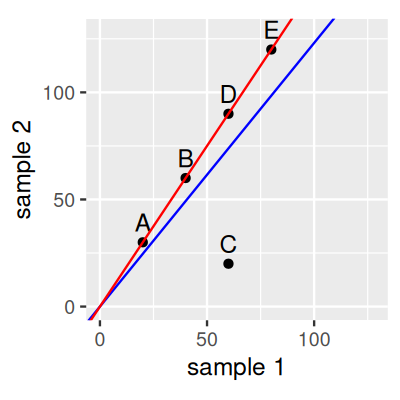</a></p>
<p>그림 8.1: 크기 인자(Size factor) 추정. 점들은 가상의 유전자들에 해당하며, 두 샘플에서의 그들의 카운트는 (x) 및 (y) 좌표로 표시됩니다. 선들은 본문에서 설명된 크기 인자 추정의 두 가지 서로 다른 방식을 나타냅니다.</p>
<p>그림 8.1에 표시된 것처럼 5개의 유전자와 두 개의 샘플이 있는 데이터 세트를 고려해 봅시다. 만약 우리가 각 샘플에 대해 카운트 합계로 (s)를 추정한다면, 파란색 선의 기울기가 그들의 비율을 나타냅니다. 이에 따르면 유전자 C는 샘플 1에 비해 샘플 2에서 하향 조절(down-regulated)된 반면, 다른 유전자들은 모두 어느 정도 상향 조절되었습니다. 만약 우리가 대신 그들의 비율이 빨간색 선에 대응하도록 (s)를 추정한다면, 우리는 여전히 유전자 C가 하향 조절되었다고 결론 내릴 것이지만 다른 유전자들은 변하지 않은 것으로 결론 내릴 것입니다. 두 번째 버전이 더 파시모니어스(parsimonious)하며 과학자들에 의해 종종 선호됩니다. 빨간색 선의 기울기는 강건 회귀(robust regression)를 통해 얻을 수 있습니다. 이것이 <strong><a href="https://bioconductor.org/packages/DESeq2/">DESeq2</a></strong> 방법이 하는 일입니다.</p>
<p>__</p>
<p>질문 8.1</p>
<p>8.3절의 예제 데이터 세트 <code>count</code>에 대해, <strong><a href="https://bioconductor.org/packages/DESeq2/">DESeq2</a></strong> 의 <code>estimateSizeFactorsForMatrix</code> 출력은 단순히 열 합계를 구했을 때와 어떻게 비교되나요?</p>
<p>__</p>
<p>해결책</p>
<p>__</p>
<p>아래 코드에 의해 생성된 그림 8.2를 보세요. 이 경우에는 큰 차이가 없으며 결과들이 거의 비례합니다.</p>
<pre><code>library("tibble")
library("ggplot2")
library("DESeq2")
ggplot(tibble(
  `size factor` = estimateSizeFactorsForMatrix(counts),
  `sum` = colSums(counts)), aes(x = `size factor`, y = `sum`)) +
  geom_point()__</code></pre>
<p><a href="08-chap_files/figure-html/fig-countdata-sfvssum-1.png" title="그림 8.2: pasilla 데이터에 대한 크기 인자 대 합계.">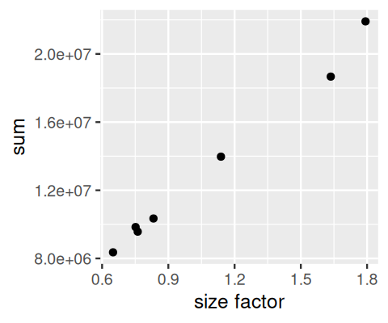</a></p>
<p>그림 8.2: pasilla 데이터에 대한 크기 인자 대 합계.</p>
<p>__</p>
<p>태스크</p>
<p>이 책의 R 소스 코드를 찾아서 그림 8.1을 생성하는 코드를 살펴보세요.</p>
<p>__</p>
<p>질문 8.2</p>
<p>pasilla 데이터 세트에서의 생물학적 반복 실험들에 대해 평균-분산 관계를 플롯하세요.</p>
<p>__</p>
<p>해결책</p>
<p>__</p>
<p>다음 코드에 의해 생성된 그림 8.3을 보세요.</p>
<pre><code>library("matrixStats")
sf = estimateSizeFactorsForMatrix(counts)
ncounts  = counts / matrix(sf,
   byrow = TRUE, ncol = ncol(counts), nrow = nrow(counts))
uncounts = ncounts[, grep("^untreated", colnames(ncounts)),
                     drop = FALSE]
ggplot(tibble(
        mean = rowMeans(uncounts),
        var  = rowVars( uncounts)),
     aes(x = log(mean), y = log(var))) +
  geom_hex() + coord_fixed() + theme(legend.position = "none") +
  geom_abline(slope = 1:2, color = c("forestgreen", "red"))__</code></pre>
<p><a href="08-chap_files/figure-html/fig-countdata-varmean-1.png" title="그림 8.3: (크기 인자 보정된) counts 데이터에 대한 분산 대 평균. 축들은 로그 스케일입니다. 기울기가 1(초록색)과 2(빨간색)이며 원점을 지나는 선들도 표시되었습니다.">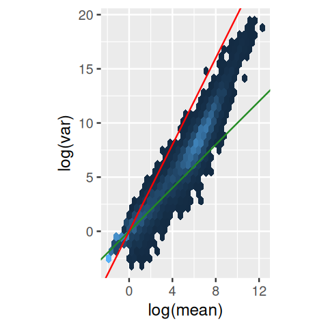</a></p>
<p>그림 8.3: (크기 인자 보정된) <code>counts</code> 데이터에 대한 분산 대 평균. 축들은 로그 스케일입니다. 기울기가 1(초록색)과 2(빨간색)이며 원점을 지나는 선들도 표시되었습니다.</p>
<p>초록색 선(기울기 1)은 분산(()v)이 평균(()m)과 같을 때 우리가 기대하는 것인데, 이는 푸아송 분포를 따르는 확률 변수의 경우와 같습니다: ()v=m. 우리는 이것이 하위 범위의 데이터에 대략적으로 들어맞는 것을 볼 수 있습니다. 빨간색 선(기울기 2)은 이차 평균-분산 관계인 ()v=m^2 에 대응합니다; 이와 평행한 선들(미표시)은 다양한 ()c 값에 대해 ()v = cm^2 를 나타낼 것입니다. 우리는 상위 범위의 데이터에서 어떤 ()c &lt; 1 값에 대해 이차 관계가 데이터에 대략적으로 들어맞는다는 것을 볼 수 있습니다.</p>
</section>
</section>
<section id="기본적인-분석" class="level2" data-number="10.3">
<h2 data-number="10.3" class="anchored" data-anchor-id="기본적인-분석"><span class="header-section-number">10.3</span> 8.5 기본적인 분석</h2>
<section id="예제-데이터-세트-pasilla-데이터" class="level3" data-number="10.3.1">
<h3 data-number="10.3.1" class="anchored" data-anchor-id="예제-데이터-세트-pasilla-데이터"><span class="header-section-number">10.3.1</span> 8.5.1 예제 데이터 세트: pasilla 데이터</h3>
<p>8.3절에서 보았던 <strong><a href="https://bioconductor.org/packages/pasilla/">pasilla</a></strong> 데이터로 돌아가 봅시다. 이 데이터는 <em>Drosophila melanogaster</em> 세포 배양 실험으로부터 얻은 것으로, 스플라이싱 인자인 <em>pasilla</em> 유전자의 RNAi 넉다운이 세포의 전사체에 미치는 효과를 조사했습니다 (<a href="16-chap.html#ref-Brooks2010">Brooks et al.&nbsp;2011</a>). 우리가 로드한 카운트 테이블의 헤더에는 두 가지 실험 조건인 <em>untreated</em> 와 <em>treated</em> 가 표시되어 있습니다. 이들은 각각 음성 대조군과 <em>pasilla</em> 에 대한 siRNA 처리에 해당합니다. 이 데이터 세트에 포함된 7개 샘플의 실험 메타데이터는 스프레드시트 형태의 표로 제공되며, 이를 로드합니다.</p>
<div class="quarto-figure quarto-figure-center">
<figure class="figure">
<p><a href="imgs/devil.png" title="여기서 보여주는 코드에서는 pasilla 패키지와 함께 제공되는 pasilla_sample_annotation.csv 파일을 로드합니다. 우리는 system.file 함수를 사용하여 그 위치를 찾습니다. 여러분 자신의 데이터로 작업할 때는 이와 유사한 파일이나, 또는 직접 pasillaSampleAnno와 같은 데이터 프레임을 준비해야 할 것입니다."></a></p>
<figcaption>여기서 보여주는 코드에서는 pasilla 패키지와 함께 제공되는 pasilla_sample_annotation.csv 파일을 로드합니다. 우리는 system.file 함수를 사용하여 그 위치를 찾습니다. 여러분 자신의 데이터로 작업할 때는 이와 유사한 파일이나, 또는 직접 pasillaSampleAnno와 같은 데이터 프레임을 준비해야 할 것입니다.</figcaption>
</figure>
</div>
<p>여기서 보여주는 코드에서는 <strong><a href="https://bioconductor.org/packages/pasilla/">pasilla</a></strong> 패키지와 함께 제공되는 <code>pasilla_sample_annotation.csv</code> 파일을 로드합니다. 우리는 <code>system.file</code> 함수를 사용하여 그 위치를 찾습니다. 여러분 자신의 데이터로 작업할 때는 이와 유사한 파일이나, 또는 직접 <code>pasillaSampleAnno</code>와 같은 데이터 프레임을 준비해야 할 것입니다.</p>
<pre><code>annotationFile = system.file("extdata",
  "pasilla_sample_annotation.csv",
  package = "pasilla", mustWork = TRUE)
pasillaSampleAnno = readr::read_csv(annotationFile)
pasillaSampleAnno __


# A tibble: 7 × 6
  file    condition type  `number of lanes` total number of read…¹ `exon counts`
  &lt;chr&gt;   &lt;chr&gt;     &lt;chr&gt;             &lt;dbl&gt; &lt;chr&gt;                          &lt;dbl&gt;
1 treate… treated   sing…                 5 35158667                    15679615
2 treate… treated   pair…                 2 12242535 (x2)               15620018
3 treate… treated   pair…                 2 12443664 (x2)               12733865
4 untrea… untreated sing…                 2 17812866                    14924838
5 untrea… untreated sing…                 6 34284521                    20764558
6 untrea… untreated pair…                 2 10542625 (x2)               10283129
7 untrea… untreated pair…                 2 12214974 (x2)               11653031
# ℹ abbreviated name: ¹​`total number of reads`</code></pre>
<p>여기서 보듯이, 전체 데이터 세트는 두 개의 배치(batch)로 생성되었습니다. 첫 번째 배치는 단일 리드(single-read) 시퀀싱을 거친 3개의 시퀀싱 라이브러리로 구성되었고, 두 번째 배치는 쌍말단(paired-end) 시퀀싱이 사용된 4개의 라이브러리로 구성되었습니다. 종종 그렇듯이, 우리는 약간의 데이터 가공(wrangling)이 필요합니다: <code>type</code> 열의 하이픈(-)을 언더스코어(_)로 바꿉니다. 왜냐하면 <strong><a href="https://bioconductor.org/packages/DESeq2/">DESeq2</a></strong> 에서는 요인 수준(factor levels)에 산술 연산자를 사용하는 것을 권장하지 않기 때문입니다. 그리고 <code>type</code>과 <code>condition</code> 열을 요인(factors)으로 변환하면서, 우리가 선호하는 수준의 순서를 명시적으로 지정합니다(기본값은 알파벳순입니다).</p>
<pre><code>library("dplyr")
pasillaSampleAnno = mutate(pasillaSampleAnno,
condition = factor(condition, levels = c("untreated", "treated")),
type = factor(sub("-.*", "", type), levels = c("single", "paired")))__</code></pre>
<p>우리는 설계(design)가 관심 요인인 <code>condition</code>과 “성가신 요인(nuisance factor)”인 <code>type</code> 사이에서 대략적으로 균형을 이루고 있음에 주목합니다:</p>
<pre><code>with(pasillaSampleAnno,
       table(condition, type))__


           type
condition   single paired
  untreated      2      2
  treated        1      2</code></pre>
<p><strong><a href="https://bioconductor.org/packages/DESeq2/">DESeq2</a></strong> 는 작업하는 데이터 세트를 저장하기 위해 <strong>DESeqDataSet</strong> 이라 불리는 특수 데이터 컨테이너를 사용합니다. 이러한 특수 컨테이너 — 또는 R 용어로 <strong>클래스(classes)</strong> — 의 사용은 관련 데이터를 함께 묶어두는 데 도움이 되기 때문에 바이오컨덕터 프로젝트의 공통적인 원칙입니다. 이러한 방식은 <em>matrix</em> 나 dataframe과 같은 기본 R 데이터 유형만을 사용하는 것에 비해 사용자가 클래스를 이해하기 위해 초기에 약간 더 많은 시간을 투자해야 하지만, 데이터의 관련 부분들 사이의 동기화 손실로 인한 버그를 피하는 데 도움이 됩니다. 또한 기본 용어로 항상 표현한다면 상당히 장황해질 수 있는 일반적인 연산들의 추상화와 캡슐화를 가능하게 합니다5. <em>DESeqDataSet</em> 은 바이오컨덕터의 <em>SummarizedExperiment</em> 클래스의 확장입니다. <em>SummarizedExperiment</em> 클래스는 다른 많은 패키지에서도 사용되므로, 이를 다루는 법을 익히면 상당히 다양한 도구들을 사용할 수 있게 될 것입니다.</p>
<p>5 또 다른 장점은 클래스가 <strong>유효성(validity)</strong> 메서드를 포함할 수 있다는 것인데, 이는 데이터가 항상 특정 기대치(예: 카운트는 양의 정수여야 함, 카운트 행렬의 열이 샘플 어노테이션 데이터 프레임의 행과 일치해야 함 등)를 충족하는지 확인해 줍니다.</p>
<p>6 아래 코드에서 <code>counts</code> 객체의 열 이름과 <code>pasillaSampleAnno</code> 데이터 프레임의 <code>file</code> 열을 일치시키기 위해 추가적인 작업이 필요함에 주목하세요. 특히 <code>file</code> 열에서 왠지 모르게 사용된 “fb”를 제거해야 합니다. 이러한 데이터 가공은 매우 흔한 일입니다. 데이터를 <em>DESeqDataSet</em> 객체에 저장하는 이유 중 하나는 일단 저장하고 나면 더 이상 그런 걱정을 할 필요가 없기 때문입니다.</p>
<p>우리는 생성자 함수 <code>DESeqDataSetFromMatrix</code>를 사용하여 카운트 데이터 행렬 <code>counts</code>와 샘플 주석 데이터 프레임 <code>pasillaSampleAnno</code>로부터 <em>DESeqDataSet</em> 을 만듭니다6.</p>
<pre><code>mt = match(colnames(counts), sub("fb$", "", pasillaSampleAnno$file))
stopifnot(!any(is.na(mt)))

pasilla = DESeqDataSetFromMatrix(
  countData = counts,
  colData   = pasillaSampleAnno[mt, ],
  design    = ~ condition)
class(pasilla)__


[1] "DESeqDataSet"
attr(,"package")
[1] "DESeq2"


is(pasilla, "SummarizedExperiment")__


[1] TRUE</code></pre>
<p><em>SummarizedExperiment</em> 클래스 — 따라서 <em>DESeqDataSet</em> — 는 카운트 행렬 행(rows)의 어노테이션을 저장하기 위한 기능도 포함하고 있습니다. 지금은 <code>counts</code> 표의 행 이름에 있는 유전자 식별자로 만족하겠습니다.</p>
<p>__</p>
<p>질문 8.3</p>
<p>우리는 어떻게 <em>SummarizedExperiment</em> 객체의 행 메타데이터에 접근할 수 있을까요? 즉, 어떻게 읽어내고, 어떻게 변경할 수 있을까요?</p>
<p>__</p>
<p>해결책</p>
<p>__</p>
<p><em>SummarizedExperiment</em> 클래스와 <code>rowData</code> 및 <code>rowData&lt;-</code> 메서드의 매뉴얼 페이지를 확인해 보세요.</p>
</section>
<section id="deseq2-방법" class="level3" data-number="10.3.2">
<h3 data-number="10.3.2" class="anchored" data-anchor-id="deseq2-방법"><span class="header-section-number">10.3.2</span> 8.5.2 <strong><a href="https://bioconductor.org/packages/DESeq2/">DESeq2</a></strong> 방법</h3>
<p>이러한 준비를 마친 후, 우리는 이제 곧바로 차등 발현 분석으로 뛰어들 준비가 되었습니다. 우리의 목표는 처리된 세포와 처리되지 않은 세포 사이에서 풍부도가 차이 나는 유전자를 식별하는 것입니다. 이를 위해 우리는 <a href="06-chap.html#sec-testing-ttest">6.5절</a>에서 접했던 (t)-검정과 개념적으로 유사하지만 수학적으로는 좀 더 복잡한 검정을 적용할 것입니다. 이러한 세부 사항은 일단 미뤄두고 8.7절에서 다시 다룰 것입니다. 일련의 표준 분석 단계들이 <code>DESeq</code>라는 단일 함수로 묶여 있습니다.</p>
<pre><code>pasilla = DESeq(pasilla)__</code></pre>
<p><code>DESeq</code> 함수는 단순히 <code>estimateSizeFactors</code> (8.4.2절에서 논의한 정규화를 위해), <code>estimateDispersions</code> (분산 추정) 및 <code>nbinomWaldTest</code> (차등 풍부도에 대한 가설 검정) 함수를 순서대로 호출하는 래퍼(wrapper)입니다. 검정은 요인 <code>condition</code>의 두 수준인 <code>untreated</code>와 <code>treated</code> 사이에서 이루어지는데, 이는 우리가 <code>design=~condition</code> 인수를 통해 <code>pasilla</code> 객체를 구성할 때 지정한 것이기 때문입니다. 그들의 거동을 수정하거나 사용자 정의 단계를 삽입하고 싶다면 언제든지 이 세 함수를 개별적으로 호출할 수 있습니다. 결과를 살펴봅시다.</p>
<pre><code>res = results(pasilla)
res[order(res$padj), ] |&gt; head()__


log2 fold change (MLE): condition treated vs untreated 
Wald test p-value: condition treated vs untreated 
DataFrame with 6 rows and 6 columns
             baseMean log2FoldChange     lfcSE      stat       pvalue
            &lt;numeric&gt;      &lt;numeric&gt; &lt;numeric&gt; &lt;numeric&gt;    &lt;numeric&gt;
FBgn0039155   730.596       -4.61901 0.1687068  -27.3789 4.88599e-165
FBgn0025111  1501.411        2.89986 0.1269205   22.8479 1.53430e-115
FBgn0029167  3706.117       -2.19700 0.0969888  -22.6521 1.33042e-113
FBgn0003360  4343.035       -3.17967 0.1435264  -22.1539 9.56283e-109
FBgn0035085   638.233       -2.56041 0.1372952  -18.6490  1.28772e-77
FBgn0039827   261.916       -4.16252 0.2325888  -17.8965  1.25663e-71
                    padj
               &lt;numeric&gt;
FBgn0039155 4.06661e-161
FBgn0025111 6.38497e-112
FBgn0029167 3.69104e-110
FBgn0003360 1.98979e-105
FBgn0035085  2.14354e-74
FBgn0039827  1.74316e-68</code></pre>
</section>
<section id="결과-탐색하기" class="level3" data-number="10.3.3">
<h3 data-number="10.3.3" class="anchored" data-anchor-id="결과-탐색하기"><span class="header-section-number">10.3.3</span> 8.5.3 결과 탐색하기</h3>
<p>차등 발현 분석 후의 첫 번째 단계는 다음의 서너 가지 기본 플롯을 시각화하는 것입니다:</p>
<ul>
<li><p>p-값의 히스토그램 (그림 8.4),</p></li>
<li><p>MA 플롯 (그림 8.5), 그리고</p></li>
<li><p>서열화 플롯(ordination plot) (그림 8.6).</p></li>
<li><p>추가로, 히트맵 (그림 8.7)도 유익할 수 있습니다.</p></li>
</ul>
<p>이들은 필수적인 데이터 품질 평가 척도입니다 — <a href="13-chap.html#sec-design-quality">13.6절</a>에서 제공된 품질 평가 및 제어에 대한 일반적인 조언도 여기에서 똑같이 적용됩니다.</p>
<p>p-값 히스토그램은 직관적입니다 (그림 8.4).</p>
<pre><code>ggplot(as(res, "data.frame"), aes(x = pvalue)) +
  geom_histogram(binwidth = 0.01, fill = "Royalblue", boundary = 0)__</code></pre>
<p><a href="08-chap_files/figure-html/fig-countdata-hist1-1.png" title="그림 8.4: 차등 발현 분석의 p-값 히스토그램.">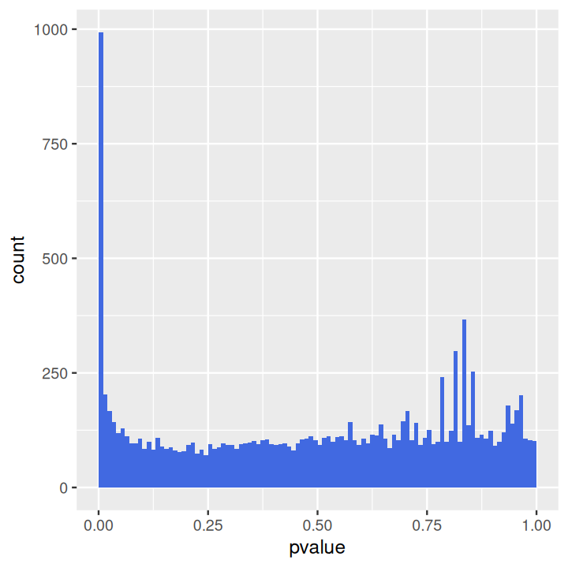</a></p>
<p>그림 8.4: 차등 발현 분석의 p-값 히스토그램.</p>
<p>분포는 두 가지 주요 성분을 보여줍니다: 0과 1 사이의 값을 갖는 균등한 배경(background)과, 왼쪽의 작은 p-값들의 정점입니다. 균등한 배경은 차등 발현되지 않는 유전자에 해당합니다. 대개 이것이 유전자의 대다수입니다. 왼쪽의 정점은 차등 발현되는 유전자에 해당합니다7. 우리가 이미 <a href="06-chap.html">6장</a>에서 보았듯이, 배경의 수준과 정점의 높이 사이의 비율은 가장 왼쪽 빈(bin)에 있는 유전자를 차등 발현된 것으로 판정할 때 수반될 허위 발견율(FDR)에 대한 대략적인 지표를 제공합니다. 우리의 경우, 가장 왼쪽 빈은 0과 0.01 사이의 모든 p-값을 포함하며 이는 993개 유전자에 해당합니다. 배경 수준은 약 100이므로, 가장 왼쪽 빈의 모든 유전자를 판정하는 것과 관련된 FDR은 약 10%가 될 것입니다.</p>
<p>7 여기서 보여주는 데이터의 경우, 히스토그램은 중간이나 오른쪽에 몇 개의 고립된 정점들도 포함하고 있습니다; 이들은 카운트가 적은 유전자들로부터 유래하며 데이터의 이산성을 반영합니다.</p>
<p>때때로 배경 분포가 균등하지 않고 오른쪽으로 갈수록 증가하는 기울어진 형태를 보이는 경우가 있습니다. 이는 대개 배치 효과의 징후입니다; 연습 문제 8.1에서 이를 더 탐구해 볼 수 있습니다.</p>
<p>MA 플롯을 생성하기 위해 우리는 <strong><a href="https://bioconductor.org/packages/DESeq2/">DESeq2</a></strong> 패키지의 <code>plotMA</code> 함수를 사용할 수 있습니다 (그림 8.5).</p>
<pre><code>plotMA(pasilla, ylim = c( -2, 2))__</code></pre>
<p><a href="08-chap_files/figure-html/fig-countdata-MA-1.png" title="그림 8.5: MA 플롯: 폴드 변화(fold change) 대 크기 인자로 정규화된 카운트의 평균. 두 축 모두 로그 스케일이 사용되었습니다. 기본적으로 조정된 p-값이 0.1보다 작으면 점들은 빨간색으로 표시됩니다. y축 범위를 벗어나는 점들은 삼각형으로 표시됩니다."></a></p>
<p>그림 8.5: <a href="https://en.wikipedia.org/wiki/MA_plot">MA 플롯</a>: 폴드 변화(fold change) 대 크기 인자로 정규화된 카운트의 평균. 두 축 모두 로그 스케일이 사용되었습니다. 기본적으로 조정된 p-값이 0.1보다 작으면 점들은 빨간색으로 표시됩니다. (y)축 범위를 벗어나는 점들은 삼각형으로 표시됩니다.</p>
<p><a href="07-chap.html">7장</a>에서 보았던 것과 유사한 PCA 플롯을 생성하기 위해 우리는 <strong><a href="https://bioconductor.org/packages/DESeq2/">DESeq2</a></strong> 의 <code>plotPCA</code> 함수를 사용할 수 있습니다 (그림 8.6).</p>
<pre><code>pas_rlog = rlogTransformation(pasilla)
plotPCA(pas_rlog, intgroup=c("condition", "type")) + coord_fixed()__</code></pre>
<p><a href="08-chap_files/figure-html/fig-countdata-PCA-1.png" title="그림 8.6: PCA 플롯. 7개의 샘플이 처음 두 주성분에 의해 확장된 2D 평면에 표시되어 있습니다.">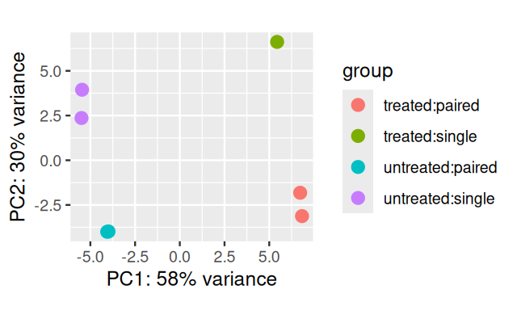</a></p>
<p>그림 8.6: PCA 플롯. 7개의 샘플이 처음 두 주성분에 의해 확장된 2D 평면에 표시되어 있습니다.</p>
<p>이전 장에서 보았듯이, 이 유형의 플롯은 실험 공변량의 전체적인 효과를 시각화하거나 배치 효과를 탐지하는 데 유용합니다. 여기서 첫 번째 주축인 PC1은 주로 관심 있는 실험 공변량(untreated / treated)과 일치하며, 두 번째 축은 대략 시퀀싱 프로토콜(single / paired)과 일치합니다.</p>
<p>우리는 데이터 변환의 일종인 <strong>정규화 로그(regularized logarithm)</strong> 또는 <strong>rlog</strong> 를 사용했는데, 이에 대해서는 8.10.2절에서 더 자세히 살펴볼 것입니다.</p>
<p>__</p>
<p>질문 8.4</p>
<p>PCA 플롯의 축들이 항상 알려진 실험 공변량과 일치해야 하나요?</p>
<p>히트맵은 카운트 테이블을 포함한 행렬 형태의 데이터 세트에 대한 개요를 빠르게 얻을 수 있는 강력한 방법이 될 수 있습니다. 아래에서 rlog 변환된 데이터로부터 히트맵을 만드는 방법을 볼 수 있습니다. <code>counts(pasilla)</code>만큼 큰 행렬의 경우 전체를 플롯하는 것은 실용적이지 않으므로, 평균 발현량이 가장 높은 상위 30개 유전자의 하위 행렬을 플롯합니다.</p>
<pre><code>library("pheatmap")
select = order(rowMeans(assay(pas_rlog)), decreasing = TRUE)[1:30]
pheatmap( assay(pas_rlog)[select, ],
     scale = "row",
     annotation_col = as.data.frame(
        colData(pas_rlog)[, c("condition", "type")] ))__</code></pre>
<p><a href="08-chap_files/figure-html/fig-figHeatmap-1-1.png" title="그림 8.7: 상위 30개 유전자의 정규화 로그 변환된 데이터 히트맵.">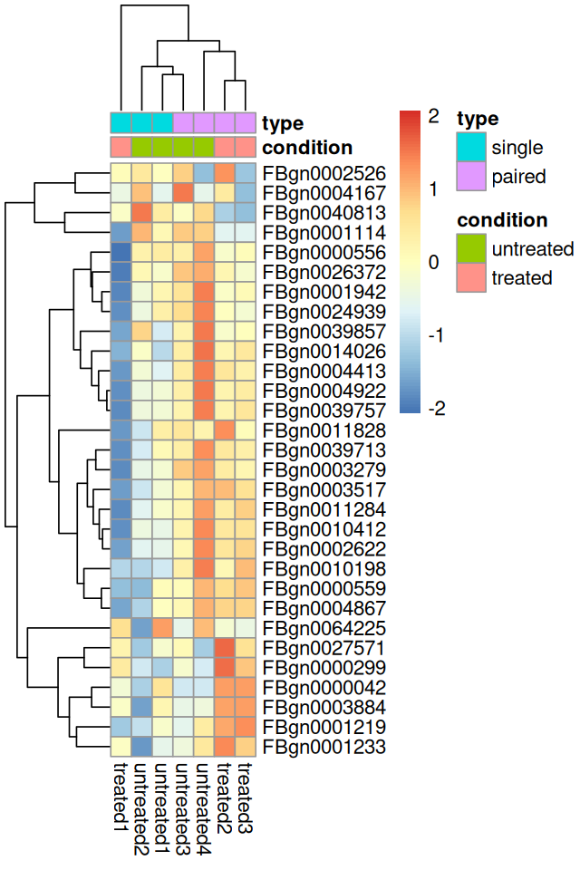</a></p>
<p>그림 8.7: 상위 30개 유전자의 정규화 로그 변환된 데이터 히트맵.</p>
<p>그림 8.7에서 <code>pheatmap</code>은 비지도 군집화(unsupervised clustering)를 통한 덴드로그램에 따라 행과 열을 정렬했습니다. 열의 군집화 결과는 <code>type</code> 인자에 의해 지배되고 있습니다. 이는 우리가 위에서 수행했던 기본적인 차등 발현 분석이 아마도 너무 나이브했으며, 조건들 간의 차등 발현 유전자를 테스트할 때 이 강력한 “성가신” 인자를 조정해야 함을 강조합니다. 우리는 8.9절에서 이 작업을 수행할 것입니다.</p>
<p>__</p>
<p>태스크</p>
<p>가장 가변적인 상위 30개 유전자를 선택하여 그림 8.7과 유사한 플롯을 생성해 보세요. 무엇이 다른가요? 평균이 매우 높은 유전자들과 분산이 매우 높은 유전자들은 서로 어떤 관계가 있나요? 그들의 데이터는 어떻게 보이나요?</p>
</section>
<section id="결과-내보내기" class="level3" data-number="10.3.4">
<h3 data-number="10.3.4" class="anchored" data-anchor-id="결과-내보내기"><span class="header-section-number">10.3.4</span> 8.5.4 결과 내보내기</h3>
<p>정렬 및 필터링이 가능한 열과 플롯이 포함된 결과의 HTML 보고서는, <code>DESeq</code> 함수에 의해 처리된 <em>DESeqDataSet</em> 에 대해 <strong><a href="https://bioconductor.org/packages/ReportingTools/">ReportingTools</a></strong> 패키지를 사용하여 내보낼 수 있습니다. 코드 예시는 <strong><a href="https://bioconductor.org/packages/ReportingTools/">ReportingTools</a></strong> 패키지의 <em>RNA-Seq differential expression</em> 비네트나, <em>DESeqDataSet</em> 클래스에 대한 <code>publish</code> 메서드 매뉴얼 페이지를 참조하세요.</p>
<p>결과의 CSV 파일은 <code>write.csv</code> (또는 <strong><a href="https://cran.r-project.org/web/packages/readr/">readr</a></strong> 패키지의 해당 함수)를 사용하여 내보낼 수 있습니다.</p>
<pre><code>write.csv(as.data.frame(res), file = "treated_vs_untreated.csv")__</code></pre>
</section>
</section>
<section id="기본-선택-사항에-대한-비판-및-가능한-수정-사항" class="level2" data-number="10.4">
<h2 data-number="10.4" class="anchored" data-anchor-id="기본-선택-사항에-대한-비판-및-가능한-수정-사항"><span class="header-section-number">10.4</span> 8.6 기본 선택 사항에 대한 비판 및 가능한 수정 사항</h2>
<section id="소수-변화-가정-the-few-changes-assumption" class="level3" data-number="10.4.1">
<h3 data-number="10.4.1" class="anchored" data-anchor-id="소수-변화-가정-the-few-changes-assumption"><span class="header-section-number">10.4.1</span> 8.6.1 ‘소수 변화’ 가정 (The few changes assumption)</h3>
<p><strong><a href="https://bioconductor.org/packages/DESeq2/">DESeq2</a></strong> (및 다른 많은 차등 발현 방법들)에서 기본 정규화와 분산 추정의 기저에는 대부분의 유전자가 차등 발현되지 않는다는 가정이 깔려 있습니다.</p>
<div class="quarto-figure quarto-figure-center">
<figure class="figure">
<p><a href="imgs/devil.png" title="정규화의 경우, 분산 추정의 경우만큼은 아니지만, 이 가정을 약간 완화할 수 있습니다: 많은 유전자가 변하더라도 상향 및 하향 방향으로 균형을 이루고 있다면 여전히 유효합니다."></a></p>
<figcaption>정규화의 경우, 분산 추정의 경우만큼은 아니지만, 이 가정을 약간 완화할 수 있습니다: 많은 유전자가 변하더라도 상향 및 하향 방향으로 균형을 이루고 있다면 여전히 유효합니다.</figcaption>
</figure>
</div>
<p>정규화의 경우, 분산 추정의 경우만큼은 아니지만, 이 가정을 약간 완화할 수 있습니다: 많은 유전자가 변하더라도 상향 및 하향 방향으로 균형을 이루고 있다면 여전히 유효합니다.</p>
<p>이 가정은 종종 합리적이지만(잘 설계된 실험은 대개 구체적인 질문을 던지므로, 모든 것이 한꺼번에 변하지는 않습니다), 만약 이 가정이 성립하지 않는다면 어떻게 해야 할까요? 그럴 때는 모든 유전자의 데이터에 대해 이러한 연산들을 적용하는 대신, 사전 생물학적 지식이나 명시적으로 통제된 외부 “스파이크-인(spiked-in)” 특징들을 통해 해당 가정이 성립한다고 믿는 (“음성 대조군”) 유전자들의 하위 집합을 식별해야 할 것입니다.</p>
<p>__</p>
<p>태스크</p>
<p>미리 정의된 유전자 하위 집합으로부터만 추정된 크기 인자와 분산 매개변수를 사용하여 <strong><a href="https://bioconductor.org/packages/DESeq2/">DESeq2</a></strong> 워크플로를 실행해 보세요.</p>
</section>
<section id="점-가설-point-like-null-hypothesis" class="level3" data-number="10.4.2">
<h3 data-number="10.4.2" class="anchored" data-anchor-id="점-가설-point-like-null-hypothesis"><span class="header-section-number">10.4.2</span> 8.6.2 점 가설 (Point-like null hypothesis)</h3>
<p>기본적으로 <code>DESeq</code> 함수는 각 유전자가 조건들 간에 동일한 풍부도를 가진다는 귀무 가설에 대해 검정합니다; 이는 단순하고 실용적인 선택입니다. 사실 표본 크기가 제한적이라면, 통계적으로 유의미한 것이 생물학적으로도 흥미로운 강도를 가지는 경향이 있습니다. 하지만 표본 크기가 증가함에 따라, 생물학적 관련성은 크지 않으면서도 통계적 유의성은 나타날 수 있습니다. 예를 들어, 많은 유전자들이 하류의 간접적인 효과에 의해 약간 섭동될 수 있습니다. 우리는 더 허용적인, 구간 기반의 귀무 가설을 사용하도록 검정을 수정할 수 있습니다; 우리는 8.10.4절에서 이를 더 탐구할 것입니다.</p>
</section>
</section>
<section id="다요인-설계-및-선형-모델" class="level2" data-number="10.5">
<h2 data-number="10.5" class="anchored" data-anchor-id="다요인-설계-및-선형-모델"><span class="header-section-number">10.5</span> 8.7 다요인 설계 및 선형 모델</h2>
<section id="다요인-설계란-무엇인가" class="level3" data-number="10.5.1">
<h3 data-number="10.5.1" class="anchored" data-anchor-id="다요인-설계란-무엇인가"><span class="header-section-number">10.5.1</span> 8.7.1 다요인 설계란 무엇인가?</h3>
<p>siRNA를 이용한 pasilla 유전자 넉다운 외에도, 우리가 특정 약물의 효과도 테스트하고 싶다고 가정해 봅시다. 우리는 세포를 음성 대조군으로 처리하거나, pasilla에 대한 siRNA로 처리하거나, 약물로 처리하거나, 또는 둘 다로 처리하는 실험을 구상할 수 있습니다. 이 실험을 분석하기 위해 다음과 같은 표기법을 사용할 수 있습니다:</p>
<p>[ y = _0 + x_1 _1 + x_2 <em>2 + x_1x_2</em>{12}. ]</p>
<p>이 방정식은 다음과 같이 해석될 수 있습니다. 좌변인 (y)는 관심 있는 실험 측정값입니다. 우리의 경우, 이는 유전자의 적절하게 변환된 발현 수준입니다 (이에 대해서는 8.8.3절에서 논의할 것입니다). RNA-Seq 실험에는 수많은 유전자가 있으므로, 각 유전자에 대해 하나씩 식 8.1과 같은 수많은 방정식을 갖게 될 것입니다. 계수 (_0)는 음성 대조군에서의 측정 기본 수준이며; 종종 <strong>절편(intercept)</strong> 이라고 불립니다.</p>
<div class="quarto-figure quarto-figure-center">
<figure class="figure">
<p><a href="imgs/devil.png" title="때때로 식 8.1은 \beta_0와 곱해지는 추가 항 x_0를 포함하여 쓰여지기도 하는데, 이때 x_0는 항상 1로 이해됩니다. 이렇게 하면 절편을 별개의 사례로 다루는 대신 다른 \beta들과 함께 일관되게 처리할 수 있어 이후의 표기법과 장부 관리가 더 쉬워집니다."></a></p>
<figcaption>때때로 식 8.1은 _0와 곱해지는 추가 항 x_0를 포함하여 쓰여지기도 하는데, 이때 x_0는 항상 1로 이해됩니다. 이렇게 하면 절편을 별개의 사례로 다루는 대신 다른 함께 일관되게 처리할 수 있어 이후의 표기법과 장부 관리가 더 쉬워집니다.</figcaption>
</figure>
</div>
<p>때때로 식 8.1은 (_0)와 곱해지는 추가 항 (x_0)를 포함하여 쓰여지기도 하는데, 이때 (x_0=1)은 항상 성립하는 것으로 이해됩니다. 이렇게 하면 절편을 별개의 사례로 다루는 대신 다른 ()들과 함께 일관되게 처리할 수 있어 이후의 표기법과 장부 관리가 더 쉬워집니다.</p>
<p>설계 요인 (x_1)과 (x_2)는 이진 지시 변수(binary indicator variables)입니다: (x_1)은 siRNA가 형질감염(transfected)되었으면 1, 아니면 0의 값을 가지며, 유사하게 (x_2)는 약물이 투여되었는지 여부를 나타냅니다. siRNA만 사용된 실험에서는 (x_1=1)이고 (x_2=0)이므로, 식 8.1의 세 번째와 네 번째 항은 사라집니다. 그러면 방정식은 (y=_0+_1)로 단순화됩니다. 이는 (_1)이 처리군과 대조군 사이의 차이를 나타냄을 의미합니다. 만약 우리의 측정값이 로그 스케일이라면,</p>
<p>[ <span class="math display">\[\begin{align} \beta_1 = y-\beta_0 &amp;=\log_2(\text{expression}_{\text{treated}}) -\log_2(\text{expression}_{\text{untreated}})\\ &amp;=\log_2\frac {\text{expression}_{\text{treated}}} {\text{expression}_{\text{untreated}}} \end{align}\]</span> ]</p>
<p>은 siRNA 처리에 의한 로그 폴드 변화(logarithmic fold change)입니다. 정확히 같은 방식으로, (_2)는 약물 처리에 의한 로그 폴드 변화입니다. 세포에 siRNA와 약물을 모두 처리하면 어떻게 될까요? 그 경우 (x_1=x_2=1)이며, 식 8.1은 다음과 같이 다시 쓰여질 수 있습니다:</p>
<p>[ _{12} = y - (_0 + _1 + _2). ]</p>
<p>이는 (_{12})가 관찰된 결과인 (y)와, 개별 처리들로부터 예상되는 결과(기본 수준에 siRNA 단독 효과 (_1) 및 약물 단독 효과 (_2)를 더하여 얻음) 사이의 차이임을 의미합니다.</p>
<p>우리는 (_{12})를 siRNA와 약물의 <strong>상호작용(interaction)</strong> 효과라고 부릅니다. 이는 물리적인 상호작용과는 아무런 관련이 없으며, 이 용어는 두 가지 서로 다른 실험 요인의 효과가 단순히 더해지는 것이 아니라 더 복잡한 방식으로 결합됨을 나타냅니다.</p>
<div class="quarto-figure quarto-figure-center">
<figure class="figure">
<p><a href="imgs/devil.png" title="덧셈은 로그 스케일에서 이루어지며, 이는 원래 스케일에서의 곱셈에 해당함에 유의하세요."></a></p>
<figcaption>덧셈은 로그 스케일에서 이루어지며, 이는 원래 스케일에서의 곱셈에 해당함에 유의하세요.</figcaption>
</figure>
</div>
<p>덧셈은 로그 스케일에서 이루어지며, 이는 원래 스케일에서의 곱셈에 해당함에 유의하세요.</p>
<p>예를 들어, 만약 약물의 타겟과 siRNA의 타겟이 동등하여 세포에 동일한 효과를 준다면, 우리는 생물학적으로 (_1=<em>2)일 것으로 예상합니다. 또한 우리는 그들의 조합이 추가적인 효과를 주지 않을 것으로 예상하므로, (</em>{12}=-_1)이 됩니다. 반면에, 만약 약물의 타겟과 siRNA의 타겟이 서로 완충 작용을 할 수 있는 평행한 경로에 있다면, (_1)과 (<em>2)는 둘 다 비교적 작겠지만 결합된 효과는 시너지 작용을 하여 (</em>{12})가 클 것으로 예상할 수 있습니다.</p>
<p>우리가 항상 상호작용에 관심을 갖는 것은 아닙니다. 많은 실험들이 여러 요인을 가지고 설계되지만 각각의 개별 효과에 가장 큰 관심을 가집니다. 그 경우, 조합 처리는 실험 설계에 포함되지 않을 수 있으며, 분석에 사용할 모델은 식 8.1에서 가장 오른쪽 항을 제거한 버전입니다.</p>
<p>우리는 실험 설계를 <strong>설계 행렬(design matrix)</strong> 로 간결하게 인코딩할 수 있습니다. 예를 들어, 위에서 설명한 조합 실험의 경우 설계 행렬은 다음과 같습니다:</p>
[
<span class="math display">\[\begin{array}{c|c|c} x_0 &amp; x_1 &amp; x_2\ \hline 1&amp;0&amp;0\ 1&amp;1&amp;0\ 1&amp;0&amp;1\ 1&amp;1&amp;1\end{array} \tag{8.4}\]\]</span>
<p>설계 행렬의 열들은 실험 요인들에 대응하고, 행들은 서로 다른 실험 조건들(우리의 경우 4가지)을 나타냅니다. 만약 조합 처리가 수행되지 않는다면, 설계 행렬은 8.4의 처음 세 행으로만 축소됩니다.</p>
</section>
<section id="노이즈와-반복-실험replicates은-어떠한가요" class="level3" data-number="10.5.2">
<h3 data-number="10.5.2" class="anchored" data-anchor-id="노이즈와-반복-실험replicates은-어떠한가요"><span class="header-section-number">10.5.2</span> 8.7.2 노이즈와 반복 실험(Replicates)은 어떠한가요?</h3>
<p>식 8.1은 관측된 데이터를 서로 다른 실험 변수들에 의해 발생한 효과들로 개념적으로 분해하는 방법을 제공합니다. 만약 우리의 데이터((y)들)가 절대적으로 정확하다면, 우리는 (x)들로 표현되는 네 가지 가능한 실험 조건 각각에 대해 하나씩 선형 방정식 시스템을 세우고 ()들을 풀 수 있을 것입니다.</p>
<p>물론, 우리는 대개 노이즈의 영향을 받는 실제 데이터를 분석하고자 합니다. 우리는 반복 실험(replicates)을 필요로 하여 노이즈 수준을 추정하고 추정된 ()들의 불확실성을 평가합니다. 그래야만 조건 사이에서 관찰된 변화가 단지 실험적 또는 자연적 변동에 의해 발생하는 것보다 유의미하게 큰지 경험적으로 평가할 수 있습니다. 우리는 방정식을 약간 확장해야 합니다:</p>
<p>[ y_{j} = x_{j0} ; <em>0 + x</em>{j1} ; <em>1 + x</em>{j2} ; <em>2 + x</em>{j1},x_{j2},_{12} + _j. ]</p>
<p>우리는 인덱스 (j)와 새로운 항 (<em>j)를 추가했습니다. 인덱스 (j)는 이제 우리의 개별 반복 실험들을 명시적으로 셉니다; 예를 들어, 네 가지 조건 각각에 대해 세 번의 반복 실험을 수행한다면 (j)는 1부터 12까지 셉니다. 설계 행렬은 이제 12개의 행을 가지며, (x</em>{jk})는 행렬의 (j)번째 행과 (k)번째 열의 값입니다.</p>
<p>[](imgs/devil.png ” <em>0가 절편이므로 모든 j에 대해 x</em>{j0}=1임을 기억하세요.”)</p>
<p>(<em>0)가 절편이므로 모든 (j)에 대해 (x</em>{j0}=1)임을 기억하세요.</p>
<p>우리가 <strong>잔차(residuals)</strong> 라고 부르는 추가 항 (_j)는 반복 실험들 사이의 차이를 흡수하기 위해 존재합니다. 하지만 한 가지 추가적인 모델링 구성 요소가 필요합니다: 12개의 방정식 시스템 8.5는 추가 정보 없이는 과소 결정(underdetermined)될 것인데, 왜냐하면 방정식의 수(12개, 각 (j)에 대해 하나씩)보다 변수의 수(12개의 입실론과 4개의 베타)가 더 많기 때문입니다. 이를 해결하기 위해 우리는 (_j)가 작을 것을 요구합니다. 이를 극복하기 위해 널리 쓰이는 한 가지 방법은 — 다른 방법들도 만나게 되겠지만 — 잔차 제곱합을 최소화하는 것입니다:</p>
<p>[ _j _j^2 . ]</p>
<p>이 요구 조건이 충족되면, ()들은 각 실험 요인의 <strong>평균적</strong> 효과를 나타내고, 잔차 (_j)는 반복 실험들 사이의 평균 주변의 실험적 변동을 반영하게 됩니다. <strong>최소제곱법(least sum of squares) 적합</strong> 이라 불리는 이 접근 방식은 간단한 행렬 대수로 달성될 수 있기 때문에 수학적으로 편리합니다. 이것이 R 함수 <code>lm</code>이 하는 일입니다.</p>
<p>__</p>
<p>질문 8.5</p>
<p>식 8.5를 쓰는 대안적인 방법은 다음과 같습니다:</p>
<p>[ y_{j} = <em>k x</em>{jk} ; _k + _j. ]</p>
<p>이것이 어떻게 식 8.5와 매핑될 수 있을까요? 즉, 상호작용 항 (x_{j1},x_{j2},_{12})는 어떻게 된 것인가요?</p>
<p>__</p>
<p>해결책</p>
<p>__</p>
<p>이것은 정말 사소한 표기법의 문제입니다: 합은 (k=0,…,3)에 대해 확장되며, (k=0,1,2)에 대한 항들은 우리가 이미 알고 있는 것과 정확히 같습니다. 우리는 (<em>{12}) 대신 (</em>{3})라고 쓰고, (x_{j3})는 (x_{j1}x_{j2})로 정의됩니다. 일반적인 표기법 8.7은 선형 모델을 구현하는 컴퓨터 소프트웨어와 수학적 증명에서 사용하기에 실용적입니다. 또한 선형 모델의 “과학적 내용”이 그 설계 행렬 (X)에 응축되어 있음을 강조합니다.</p>
<p>__</p>
<p>태스크</p>
<p>목적 함수 8.6이 성립하도록 식 8.5를 데이터에 적합시켰다면, 적합 잔차 (_j)의 평균이 0임을 보이세요.</p>
</section>
<section id="분산-분석-analysis-of-variance" class="level3" data-number="10.5.3">
<h3 data-number="10.5.3" class="anchored" data-anchor-id="분산-분석-analysis-of-variance"><span class="header-section-number">10.5.3</span> 8.7.3 분산 분석 (Analysis of variance)</h3>
<p>8.5와 같은 모델을 <strong>선형 모델(linear model)</strong> 이라고 부르며, 종종 기준 8.6이 데이터를 적합시키는 데 사용됨을 암시합니다. 이 접근 방식은 우아하고 강력하지만, 초보자가 그 모든 측면을 이해하는 데는 시간이 좀 걸릴 수 있습니다. 각기 다른 실험 조건에 대해 단순히 반복 실험들의 평균을 취하고 이 값들을 조건들 사이에서 비교하는 것에 비해 어떤 이점이 있을까요? 단순한 경우에 후자의 접근 방식은 직관적이고 효과적일 수 있습니다. 하지만 서로 다른 그룹에서 반복 실험의 수가 모두 같지 않거나, 하나 이상의 (x)-변수가 연속형 값을 가질 때 한계에 부딪히게 됩니다. 이러한 경우, 결국 데이터에 8.5와 같은 것을 적합시키는 것으로 귀결될 것입니다. 8.5를 생각하는 유용한 방법은 <strong>분산 분석(analysis of variance)</strong>, 약어로 ANOVA라는 용어에 담겨 있습니다. 사실 식 8.5가 하는 일은 우리가 실험 과정에서 관찰한 (y)의 가변성을 기초적인 성분들로 분해하는 것입니다: 기본 수준 값 (_0), 첫 번째 변수의 효과에 의해 발생하는 가변성 (_1), 두 번째 변수의 효과에 의해 발생하는 가변성 (<em>2), 상호작용의 효과에 의해 발생하는 가변성 (</em>{12}), 그리고 설명되지 않는 가변성입니다. 이들 중 마지막 것을 우리는 흔히 <strong>노이즈(noise)</strong> 라고 부르고, 다른 것들은 <strong>체계적 가변성(systematic variability)</strong> 이라고 부릅니다.</p>
<div class="quarto-figure quarto-figure-center">
<figure class="figure">
<p><a href="imgs/devil.png" title="노이즈와 체계적 가변성의 구분은 보는 사람의 관점에 달려 있으며, 현실이 아니라 우리의 모델에 달려 있습니다."></a></p>
<figcaption>노이즈와 체계적 가변성의 구분은 보는 사람의 관점에 달려 있으며, 현실이 아니라 우리의 모델에 달려 있습니다.</figcaption>
</figure>
</div>
<p>노이즈와 체계적 가변성의 구분은 보는 사람의 관점에 달려 있으며, 현실이 아니라 우리의 모델에 달려 있습니다.</p>
</section>
<section id="강건성-robustness" class="level3" data-number="10.5.4">
<h3 data-number="10.5.4" class="anchored" data-anchor-id="강건성-robustness"><span class="header-section-number">10.5.4</span> 8.7.4 강건성 (Robustness)</h3>
<p>합 8.6은 데이터의 이상치(outliers)에 민감합니다. 이상치를 가진 단 하나의 측정값 (y_{j})가 () 추정치를 다른 반복 실험들에 의해 함축된 값들로부터 멀리 끌어당길 수 있습니다. 이는 최소제곱법에 기반한 방법들이 낮은 <strong>붕괴점(breakdown point)</strong> 을 갖는다는 잘 알려진 사실입니다: 단 하나의 데이터 포인트만 이상치여도 전체 통계 결과가 강력하게 영향을 받을 수 있습니다. 예를 들어, (n)개 숫자 세트의 평균은 ()의 붕괴점을 갖는데, 이는 숫자들 중 단 하나만 바꿈으로써 평균을 임의로 바꿀 수 있음을 의미합니다. 반면에 중앙값(median)은 훨씬 더 높은 붕괴점을 갖습니다. 숫자 하나를 바꾸는 것은 종종 아무런 영향을 주지 않으며, 영향이 있더라도 그 효과는 순위의 중간에 있는 데이터 포인트들의 범위(즉, () 순위에 인접한 것들)로 제한됩니다. 중앙값을 임의로 높게 바꾸려면 관측치의 절반을 바꾸어야 합니다. 우리는 중앙값을 <strong>강건(robust)</strong> 하다고 부르며, 그 붕괴점은 ()입니다. 숫자 세트 (y_1, y_2, …)의 중앙값이 합 (_j|y_j-_0|)을 최소화한다는 점을 기억하세요.</p>
<p>이상치에 대해 더 높은 수준의 강건성을 달성하기 위해, 최소화의 목적 함수로 제곱합 8.6 대신 다른 선택지들이 사용될 수 있습니다. 그중에는 다음과 같은 것들이 있습니다:</p>
<p>[ <span class="math display">\[\begin{align} R &amp;= \sum_j |\varepsilon_j| &amp; \text{최소 절대 편차 (Least absolute deviations)} \\ R &amp;= \sum_j \rho_s(\varepsilon_j) &amp; \text{M-추정 (M-estimation)} \\ R &amp;= Q_{\theta}\,( \{\varepsilon_1^2, \varepsilon_2^2,... \} ) &amp; \text{LTS, LQS} \\ R &amp;= \sum_j w_j \varepsilon_j^2 &amp; \text{일반화 가중 회귀 (general weighted regression)} \end{align}\]</span> ]</p>
<p>여기서 (R)은 최소화되어야 할 양입니다. 식 8.8의 첫 번째 선택지는 <strong>최소 절대 편차(least absolute deviations)</strong> 회귀라고 불립니다. 이는 중앙값의 일반화로 볼 수 있습니다. 개념적으로는 단순하고 언뜻 보기에 매력적이지만, 제곱합보다 최소화하기가 더 어렵고, 특히 데이터가 제한적이거나 모델에 잘 맞지 않을 때 덜 안정적이고 덜 효율적일 수 있습니다8. 식 8.8의 두 번째 선택지인 <strong>M-추정(M-estimation)</strong> 은 제한된 범위의 ()에 대해서는 이차 함수(quadratic function)처럼 보이지만, 절댓값 (||)이 스케일 매개변수 (s)보다 큰 경우에는 기울기가 더 작아지거나, 평평해지거나, 심지어 다시 0으로 떨어지는 페널티 함수 (_s)를 사용합니다 (최소제곱 회귀는 (_s()=^2)인 특수한 경우입니다). 이 이면의 의도는 이상치, 즉 큰 잔차를 가진 데이터 포인트의 효과를 낮게 가중하는 것입니다 (<a href="16-chap.html#ref-Huber:AMS:1964">Huber 1964</a>). (s)의 선택이 이루어져야 하며 이것이 무엇을 이상치로 부를지 결정합니다. 심지어 0 근처에서 (_s)가 이차 함수여야 한다는 요구 조건을 버릴 수도 있으며(그의 이계 도함수가 양수이기만 하다면), 문헌에서는 다양한 (_s) 함수 선택지가 제안되었습니다. 그 목표는 데이터가 모델에 잘 맞을 때와 그곳에서 추정기에 바람직한 통계적 속성(예: 편향과 효율성)을 부여하면서도, 그렇지 않은 데이터 포인트의 영향력을 제한하거나 무효화하고 계산을 다루기 쉽게 유지하는 것입니다.</p>
<p>8 <a href="https://en.wikipedia.org/wiki/Least_absolute_deviations">위키백과 문서</a>에서 개요를 제공합니다.</p>
<p>__</p>
<p>질문 8.6</p>
<p>M-추정기를 위해 Huber (<a href="16-chap.html#ref-Huber:AMS:1964">1964</a>)가 제안한 함수 (_s())의 그래프를 그려보세요.</p>
<p>__</p>
<p>해결책</p>
<p>__</p>
<p>Huber의 논문은 75페이지에서 다음과 같이 정의합니다:</p>
[ _s() = {
<span class="math display">\[\begin{array}{cc} \frac{1}{2}\varepsilon^2, \quad\text{for }|\varepsilon|&lt; s\\ s|\varepsilon|-\frac{1}{2}s^2, \quad\text{for }|\varepsilon|\ge s\\ \end{array}\]</span>
<p>. ]</p>
<p>아래 코드로 생성된 그래프는 그림 8.8에 나와 있습니다.</p>
<pre><code>rho = function(x, s)
  ifelse(abs(x) &lt; s, x^2 / 2,  s * abs(x) - s^2 / 2)

df = tibble(
  x        = seq(-7, 7, length.out = 100),
  parabola = x ^ 2 / 2,
  Huber    = rho(x, s = 2))

ggplot(reshape2::melt(df, id.vars = "x"),
  aes(x = x, y = value, col = variable)) + geom_line()__</code></pre>
<p><a href="08-chap_files/figure-html/fig-countdata-mestimator-1.png" title="그림 8.8: s=2를 선택했을 때의 \rho_s(\varepsilon) 그래프.">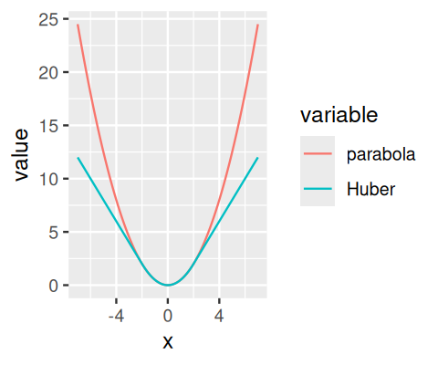</a></p>
<p>그림 8.8: (s=2)를 선택했을 때의 (_s()) 그래프.</p>
<p>식 8.8의 세 번째 선택지는 최소제곱법을 또 다른 방식으로 일반화합니다. <strong>최소 분위수 제곱(least quantile of squares, LQS)</strong> 회귀에서는 제곱 잔차의 합을 분위수로 대체합니다. 예를 들어, 중앙값인 (Q_{50}), 또는 90%-분위수인 (Q_{90})입니다 (<a href="16-chap.html#ref-Rousseeuw:1987">Peter J. Rousseeuw 1987</a>). 이의 변형인 <strong>최소 절단 제곱합(least trimmed sum of squares, LTS)</strong> 회귀에서는 모든 잔차가 아니라, 가장 작은 잔차들의 분율 (0)에 대해서만 제곱 잔차의 합을 사용합니다. 두 경우 모두의 동기는 이상치 데이터 포인트가 큰 잔차를 낳으며, 이들이 드문 한 분위수나 절단된 합에 영향을 주지 않는다는 것입니다.</p>
<p>하지만 대가가 있습니다: 최소제곱 최적화 8.6은 직관적인 선형 대수를 통해 수행될 수 있는 반면, M-추정, LQS 및 LTS 회귀를 위해서는 더 복잡한 반복 최적화 알고리즘이 필요합니다.</p>
<p>식 8.8의 마지막 접근 방식은 이상치를 하향 가중하는 훨씬 더 복잡한 방식을 나타냅니다. 이는 우리가 각 관측치에 어느 정도의 가중치 (w_j)를 주고 싶은지(아마도 이상치에 낮은 가중치를 주는 방식) 결정할 수 있는 어떤 방법을 가지고 있다고 가정합니다. 예를 들어, 8.10.3절에서 우리는 <strong><a href="https://bioconductor.org/packages/DESeq2/">DESeq2</a></strong> 패키지에서 사용되는 접근 방식을 마주하게 될 것인데, 여기서는 <strong>쿡의 거리(Cook’s distance)</strong> 라 불리는 척도를 사용하여 각 데이터 포인트가 적합된 계수 ()들에 미치는 영향력을 평가합니다. 쿡의 거리가 너무 크다고 판단되는 데이터 포인트들에 대해서는 가중치 (w_j)를 0으로 설정하고, 다른 데이터 포인트들은 (w_j=1)을 갖게 됩니다. 결과적으로 이는 이상치 데이터 포인트들을 버리고 나머지에 대해 일반 회귀를 수행하는 것과 같습니다. 가중치를 가지고 가는 추가적인 계산 노력은 무시할 수 있으며, 최적화는 여전히 직관적인 선형 대수입니다.</p>
<p>이상치 강건성에 대한 이러한 모든 접근 방식들은 어느 정도의 주관성을 도입하며 충분한 반복 실험에 의존합니다. 주관성은 내려야 하는 매개변수 선택에 반영됩니다: 식 8.8 (2)에서의 (s), 8.8 (3)에서의 (), 8.8 (4)에서의 가중치 등입니다. 한 과학자의 이상치가 다른 과학자의 노벨상이 될 수도 있습니다. 반면에, 이상치 제거가 허술한 실험에 대한 구제책이 되거나 희망 섞인 관측에 대한 정당화가 되어서는 안 됩니다.</p>
<p>__</p>
<p>태스크</p>
<p>위의 강건 회귀 방법들의 구현체를 R 및 CRAN 패키지들에서 찾아보세요. 시작하기 좋은 곳은 <a href="https://cran.r-project.org/web/views/Robust.html">CRAN 태스크 뷰: 강건 통계 방법(Robust Statistical Methods)</a>입니다.</p>
</section>
</section>
<section id="일반화-선형-모델" class="level2" data-number="10.6">
<h2 data-number="10.6" class="anchored" data-anchor-id="일반화-선형-모델"><span class="header-section-number">10.6</span> 8.8 일반화 선형 모델</h2>
<p>우리는 다음 응용 예제로 넘어가기 전에 두 가지 이론적 개념을 더 탐구해야 합니다. 식 8.5와 같은 형태의 방정식은 결과 변수 (y)의 기댓값을 설계 행렬의 선형 함수로 모델링하며, 최소제곱 기준 8.6(또는 그 강건한 변체)에 따라 데이터에 적합됩니다. 우리는 이제 이러한 가정들을 일반화하고자 합니다.</p>
<section id="변환된-스케일에서-데이터-모델링하기" class="level3" data-number="10.6.1">
<h3 data-number="10.6.1" class="anchored" data-anchor-id="변환된-스케일에서-데이터-모델링하기"><span class="header-section-number">10.6.1</span> 8.8.1 변환된 스케일에서 데이터 모델링하기</h3>
<p>우리는 데이터를 얻은 그대로의 스케일이 아니라 어떤 변환(예를 들어 로그) 후에 고려하는 것이 유익할 수 있음을 이미 보았습니다. 이 아이디어는 일반화될 수 있는데, 맥락에 따라 다른 변환들이 유용하기 때문입니다. 예를 들어, 선형 모델 8.5는 질병 위험 지표와 같이 ([0,1]) 구간 내에 한정된 결과들을 모델링하는 데 직접적으로 유용하지는 않을 것입니다. 선형 모델에서 (y)의 값은 원칙적으로 실수축 전체를 포괄합니다. 하지만 만약 우리가 우변의 표현식을 시그모이드(sigmoid) 함수, 예를 들어 (f(y) = 1/(1+e^{-y}))로 변환한다면, 이 함수의 범위9는 0과 1 사이로 한정되어 그러한 결과를 모델링하는 데 사용될 수 있습니다.</p>
<p>9 이는 로지스틱(logistic) 함수라 불리며 (<a href="16-chap.html#ref-Verhulst:1845">Verhulst 1845</a>), 연관된 회귀 모델을 <strong>로지스틱 회귀</strong> 라고 합니다.</p>
</section>
<section id="다른-오차-분포" class="level3" data-number="10.6.2">
<h3 data-number="10.6.2" class="anchored" data-anchor-id="다른-오차-분포"><span class="header-section-number">10.6.2</span> 8.8.2 다른 오차 분포</h3>
<p>다른 일반화는 최소화 기준 8.6에 관한 것입니다. 사실, 이 기준은 특정한 확률 모델과 <strong>최대 우도</strong> 원리로부터 도출될 수 있습니다 (우리는 이미 <a href="02-chap.html">2장</a>에서 이를 접했습니다). 이를 보기 위해, 다음과 같은 확률 모델을 고려해 봅시다:</p>
<p>[ p(_j) = (-), ]</p>
<p>즉, 우리는 잔차들이 평균 0, 표준 편차 ()인 정규 분포를 따른다고 믿습니다. 그렇다면 좋은 모델(즉, 좋은 ()들의 세트)에 대해 이러한 확률들이 커야 한다고 요구하는 것이 타당합니다. 형식적으로는,</p>
<p>[ _j p(_j) . ]</p>
<p>__</p>
<p>질문 8.7</p>
<p>우도 8.10을 최대화하는 것이 제곱 잔차의 합 8.6을 최소화하는 것과 동등함을 보이세요.</p>
<p>__</p>
<p>해결책</p>
<p>__</p>
<p>식 8.9를 8.10에 대입하고 로그를 취해 보세요.</p>
<p>핵심 개념들을 다시 정리해 봅시다: 식 8.10의 좌변, 즉 잔차들 확률의 곱은 모델 매개변수 (_1, _2, …)와 데이터 (y_1, y_2, …) 모두의 함수입니다; 이를 (f(,y))라고 부릅시다. 만약 우리가 모델 매개변수 ()가 주어져 고정되어 있다고 생각한다면, 축소된 함수 (f(y))는 단순히 데이터의 확률을 나타냅니다. 우리는 이를 예를 들어 데이터를 시뮬레이션하는 데 사용할 수 있을 것입니다. 만약 반대로 우리가 데이터를 주어진 것으로 간주한다면, (f())는 모델 매개변수들의 함수이며, 이를 <strong>우도(likelihood)</strong> 라고 부릅니다. 두 번째 관점이 우리가 식 8.6(따라서 8.10)을 최적화할 때 취하는 관점이며, 따라서 이런 방식으로 얻은 ()들을 <strong>최대 우도 추정치(maximum-likelihood estimates)</strong> 라고 부릅니다.</p>
<div class="quarto-figure quarto-figure-center">
<figure class="figure">
<p><a href="imgs/devil.png" title="우리가 최대 우도 원리를 통해 최소제곱 회귀를 정당화하기 위해 정규 분포를 편리한 논거로 사용할 수는 있지만, 최소제곱 회귀가 유용한 결과를 주기 위해 데이터가 반드시 정규 분포를 따라야 하는 것은 아님을 기억하는 것이 좋습니다. 사실 최소제곱 적합은 데이터가 비정규 분포인 경우에도 \beta들에 대한 유용한 추정치를 제공하는 경우가 많지만, 이는 구체적인 상황에 따라 달라집니다."></a></p>
<figcaption>우리가 최대 우도 원리를 통해 최소제곱 회귀를 정당화하기 위해 정규 분포를 편리한 논거로 사용할 수는 있지만, 최소제곱 회귀가 유용한 결과를 주기 위해 데이터가 반드시 정규 분포를 따라야 하는 것은 아님을 기억하는 것이 좋습니다. 사실 최소제곱 적합은 데이터가 비정규 분포인 경우에도 대한 유용한 추정치를 제공하는 경우가 많지만, 이는 구체적인 상황에 따라 달라집니다.</figcaption>
</figure>
</div>
<p>우리가 최대 우도 원리를 통해 최소제곱 회귀를 정당화하기 위해 정규 분포를 편리한 논거로 사용할 수는 있지만, 최소제곱 회귀가 유용한 결과를 주기 위해 데이터가 반드시 정규 분포를 따라야 하는 것은 아님을 기억하는 것이 좋습니다. 사실 최소제곱 적합은 데이터가 비정규 분포인 경우에도 ()들에 대한 유용한 추정치를 제공하는 경우가 많지만, 이는 구체적인 상황에 따라 달라집니다.</p>
<p>우리가 이제 할 수 있는 일반화는 다른 확률 모델을 사용하는 것입니다. 우리는 식 8.9 대신 정규 분포 이외의 다른 분포들의 밀도를 사용할 수 있습니다. 예를 들어, 카운트 데이터를 다룰 수 있기 위해 우리는 감마-포아송 분포를 사용할 것입니다.</p>
</section>
<section id="카운트-데이터를-위한-일반화-선형-모델" class="level3" data-number="10.6.3">
<h3 data-number="10.6.3" class="anchored" data-anchor-id="카운트-데이터를-위한-일반화-선형-모델"><span class="header-section-number">10.6.3</span> 8.8.3 카운트 데이터를 위한 일반화 선형 모델</h3>
<p><strong><a href="https://bioconductor.org/packages/DESeq2/">DESeq2</a></strong> 에서의 차등 발현 분석은 다음과 같은 형태의 일반화 선형 모델을 사용합니다:</p>
<p>[ <span class="math display">\[\begin{align} K_{ij} &amp; \sim \text{GP}(\mu_{ij}, \alpha_i) \\ \mu_{ij} &amp;= s_j\, q_{ij} \\ \log_2(q_{ij}) &amp;= \sum_k x_{jk} \beta_{ik}. \end{align}\]</span> ]</p>
<p>하나씩 풀어봅시다. 유전자 (i), 샘플 (j)에 대한 카운트 (K_{ij})는 평균 (<em>{ij})와 분산(dispersion) (<em>i)를 가진 두 개의 매개변수가 있는 감마-포아송(GP) 분포를 사용하여 모델링됩니다. 기본적으로 분산은 각 유전자 (i)마다 다르지만 모든 샘플에 걸쳐 동일하므로 인덱스 (j)가 없습니다. 식 8.11의 두 번째 줄은 평균이 샘플 특이적 크기 인자 (s_j)10와, 샘플 (j)에서의 유전자 (i)에 대한 단편들의 실제 기대 농도에 비례하는 (q</em>{ij})로 구성됨을 나타냅니다. (q</em>{ij})의 값은 세 번째 줄의 선형 모델에 의해 <strong>연결 함수(link function)</strong> 인 (<em>2)를 통해 주어집니다. 설계 행렬 ((x</em>{jk}))는 모든 유전자에 대해 동일합니다 (따라서 (i)에 의존하지 않습니다). 그 행 (j)는 샘플들에 대응하고, 열 (k)는 실험 요인들에 대응합니다. 가장 단순한 경우인 쌍체 비교의 경우, 설계 행렬은 오직 두 개의 열만을 가지며, 그중 하나는 모든 곳이 1로 채워져 있고 (8.7.1절의 (<em>0)에 대응), 다른 하나는 샘플이 어느 그룹에 속하느냐에 따라 0 또는 1을 포함합니다. 계수 (</em>{ik})는 설계 행렬 (X)의 각 열에 대해 유전자 (i)에 대한 (_2) 폴드 변화를 제공합니다.</p>
<p>10 이 모델은 샘플 <strong>및</strong> 유전자 의존적인 정규화 인자 (s_{ij})를 사용하도록 일반화될 수 있습니다. 이는 <strong><a href="https://bioconductor.org/packages/DESeq2/">DESeq2</a></strong> 패키지의 문서에 설명되어 있습니다.</p>
</section>
</section>
<section id="pasilla-데이터의-2-요인-분석" class="level2" data-number="10.7">
<h2 data-number="10.7" class="anchored" data-anchor-id="pasilla-데이터의-2-요인-분석"><span class="header-section-number">10.7</span> 8.9 pasilla 데이터의 2-요인 분석</h2>
<p>우리가 이미 8.5절에서 고려했던 siRNA 처리 외에도, <strong><a href="https://bioconductor.org/packages/pasilla/">pasilla</a></strong> 데이터는 수행된 시퀀싱 유형을 나타내는 또 다른 공변량인 <code>type</code>을 가지고 있습니다.</p>
<p>우리는 8.5.3절의 탐색적 데이터 분석(EDA) 플롯에서 후자가 데이터에 상당한 체계적 효과를 미쳤음을 보았습니다. 우리의 8.5절 기본 분석은 이를 고려하지 않았지만, 이제 그렇게 할 것입니다. 이는 조건들 간의 유전자 차등 발현 중 어떤 것이 처리에 기인한 것이고, 어떤 것이 시퀀싱 유형에 의해 혼동되거나 가려진 것인지에 대한 더 정확한 그림을 얻는 데 도움이 될 것입니다.</p>
<pre><code>pasillaTwoFactor = pasilla
design(pasillaTwoFactor) = formula(~ type + condition)
pasillaTwoFactor = DESeq(pasillaTwoFactor)__</code></pre>
<p>두 변수 <code>type</code>과 <code>condition</code> 중에서 주된 관심사는 <code>condition</code>이며, <strong><a href="https://bioconductor.org/packages/DESeq2/">DESeq2</a></strong> 에서의 관례는 이를 포뮬러의 끝에 두는 것입니다. 이 관례는 모델 적합에는 아무런 영향을 주지 않지만, 이후의 결과 보고를 단순화하는 데 도움이 됩니다. 다시 한 번, 우리는 각 유전자의 통계량을 포함하는 데이터 프레임을 반환하는 <code>results</code> 함수를 사용하여 결과에 접근합니다.</p>
<pre><code>res2 = results(pasillaTwoFactor)
head(res2, n = 3)__


log2 fold change (MLE): condition treated vs untreated 
Wald test p-value: condition treated vs untreated 
DataFrame with 3 rows and 6 columns
             baseMean log2FoldChange     lfcSE       stat    pvalue      padj
            &lt;numeric&gt;      &lt;numeric&gt; &lt;numeric&gt;  &lt;numeric&gt; &lt;numeric&gt; &lt;numeric&gt;
FBgn0000003  0.171569      0.6745518  3.871091  0.1742537  0.861666        NA
FBgn0000008 95.144079     -0.0406731  0.222215 -0.1830351  0.854770  0.951975
FBgn0000014  1.056572     -0.0849880  2.111821 -0.0402439  0.967899        NA</code></pre>
<p><code>type</code> 변수와 연관된 (_2) 폴드 변화, p-값 및 조정된 p-값들을 가져오는 것도 가능합니다. <code>results</code> 함수는 변수 이름, 폴드 변화의 분자에 해당하는 수준, 그리고 분모에 해당하는 수준을 사용자가 지정할 수 있게 해주는 <code>contrast</code> 인수를 받습니다.</p>
<pre><code>resType = results(pasillaTwoFactor,
  contrast = c("type", "single", "paired"))
head(resType, n = 3)__


log2 fold change (MLE): type single vs paired 
Wald test p-value: type single vs paired 
DataFrame with 3 rows and 6 columns
             baseMean log2FoldChange     lfcSE      stat    pvalue      padj
            &lt;numeric&gt;      &lt;numeric&gt; &lt;numeric&gt; &lt;numeric&gt; &lt;numeric&gt; &lt;numeric&gt;
FBgn0000003  0.171569      -1.611546  3.871083 -0.416304  0.677188        NA
FBgn0000008 95.144079      -0.262255  0.220686 -1.188362  0.234691  0.543822
FBgn0000014  1.056572       3.290586  2.087243  1.576522  0.114905        NA</code></pre>
<p>그렇다면 <code>type</code>을 성가신 요인(때로는 좀 더 정중하게 <strong>차단 요인(blocking factor)</strong> 이라고도 부름)으로 고려한 이번 분석을 통해, 8.5절의 단순한 두 그룹 비교와 비교하여 무엇을 얻었을까요? 두 분석으로부터 얻은 p-값들을 서로에 대해 플롯해 봅시다.</p>
<pre><code>trsf = function(x) ifelse(is.na(x), 0, (-log10(x)) ^ (1/6))
ggplot(tibble(pOne = res$pvalue,
              pTwo = res2$pvalue),
    aes(x = trsf(pOne), y = trsf(pTwo))) +
    geom_hex(bins = 75) + coord_fixed() +
    xlab("단일 요인 분석 (condition)") +
    ylab("2개 요인 분석 (type + condition)") +
    geom_abline(col = "orange")__</code></pre>
<p><a href="08-chap_files/figure-html/fig-countdata-scpres1res2-1.png" title="그림 8.9: 단일 요인(condition) 모델과 2개 요인(type + condition) 모델로부터 얻은 p-값들의 비교. 축들은 시각화 목적으로 p-값의 동적 범위를 압축하는, 임의로 선택된 단조 감소 변환인 (-log10 p)^{1/6} 에 해당합니다. 결합 분포가 대각선(bisector) 위쪽에 놓이는 경향을 볼 수 있으며, 이는 2-요인 분석에서의 작은 p-값들이 일반적으로 1-요인 분석에서의 그것들보다 더 작음을 나타냅니다.">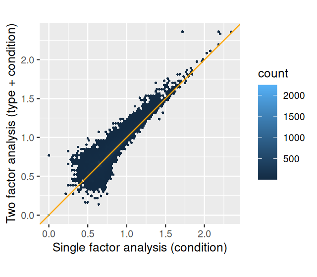</a></p>
<p>그림 8.9: 단일 요인(condition) 모델과 2개 요인(type + condition) 모델로부터 얻은 p-값들의 비교. 축들은 시각화 목적으로 p-값의 동적 범위를 압축하는, 임의로 선택된 단조 감소 변환인 ((-_{10}p)^{1/6}) 에 해당합니다. 결합 분포가 대각선(bisector) 위쪽에 놓이는 경향을 볼 수 있으며, 이는 2-요인 분석에서의 작은 p-값들이 일반적으로 1-요인 분석에서의 그것들보다 더 작음을 나타냅니다.</p>
<p>그림 8.9에서 볼 수 있듯이, 2-요인 분석에서의 p-값들은 1-요인 분석의 것들과 유사하지만 일반적으로 더 작습니다. 더 정교한 분석을 통해, 비록 미미하긴 하지만 검정력이 증가했습니다. 각 경우에 대해 특정 유의성 임계값을 통과하는 유전자 수를 셈으로써 이를 확인할 수도 있습니다:</p>
<pre><code>compareRes = table(
   `단순 분석` = res$padj &lt; 0.1,
   `2-요인 분석` = res2$padj &lt; 0.1 )
addmargins( compareRes )__


               2-요인 분석
단순 분석 FALSE TRUE  Sum
      FALSE  6973  289 7262
      TRUE     25 1036 1061
      Sum    6998 1325 8323</code></pre>
<p>2-요인 분석은 10%의 FDR 임계값에서 1325개의 차등 발현 유전자를 찾아낸 반면, 1-요인 분석은 1061개를 찾아냈습니다. 2-요인 분석을 통해 검출력이 증가했습니다. 일반적으로 이러한 이득은 데이터에 따라 훨씬 더 크거나 더 작을 수 있습니다. 적절한 모델 선택은 실험 설계와 데이터 품질에 대한 정보에 입각한 적응을 필요로 합니다.</p>
<p>__</p>
<p>질문 8.8</p>
<p><code>type</code> 변수를 고려하지 않았을 때 왜 유의미한 유전자가 더 적게 검출될까요? 더 일반적으로, 차단 요인(blocking factors)을 고려하는 것(또는 고려하지 않는 것)의 이점에 대해 이것이 시사하는 바는 무엇인가요?</p>
<p>__</p>
<p>해결책</p>
<p>__</p>
<p>차단 요인을 모델링하지 않는다면, 그 요인에 의한 데이터의 가변성은 ()들에 의해 흡수되어야 합니다. 이는 ()들이 차단 요인을 포함한 모델에서보다 일반적으로 더 크다는 것을 의미합니다. 더 높은 수준의 노이즈는 ()-추정치의 더 높은 불확실성으로 이어집니다. 반면에, 차단 요인을 포함한 모델은 추정해야 할 매개변수가 더 많습니다. 통계적 용어로 말하자면, 적합에 쓰이는 “자유도”가 더 적습니다. 이러한 두 효과는 서로 상충하며, 어느 쪽이 우세할지, 그리고 어떤 모델링 선택이 더 많거나 적은 유의미한 결과를 낼지는 데이터에 달려 있습니다.</p>
<p>__</p>
<p>질문 8.9</p>
<p>혼동(Confounding)이란 무엇인가요? 차단 요인을 고려하지 않는 것이 더 <strong>많은</strong> 유전자를 검출하는 결과로 이어질 수도 있을까요?</p>
<p>__</p>
<p>해결책</p>
<p>__</p>
<p>네. 만약 <code>condition</code>과 <code>type</code> 변수가 지금처럼 잘 균형 잡혀 있지 않고, 부분적으로나 완전히 혼동되어 있다고 상상해 보세요. 그 경우 <code>type</code>에 의한 데이터 차이가 <code>type</code>-효과를 흡수할 수 있는 모델이 없다면 <code>condition</code>의 효과로 오인될 수 있습니다. 과학적으로 그러한 실험(및 분석)은 꽤나 당혹스러운 일이 될 수 있습니다.</p>
<p>__</p>
<p>질문 8.10</p>
<p>약물 처리가 있는 것과 없는 것 각각 10개의 서로 다른 세포주가 있는 쌍체(paired) 실험 설계를 고려해 보세요. 이는 어떻게 분석되어야 할까요?</p>
<p>__</p>
<p>해결책</p>
<p>__</p>
<p>만약 우리가 단순히 (처리군 대 대조군) 두 그룹 비교를 수행한다면, 많은 처리 효과들이 세포주 간의 강력한 변동에 묻혀버릴 수 있습니다. 하지만 우리는 단순히 세포주 정체성을 차단 요인으로 추가함으로써 쌍체 분석을 설정할 수 있습니다. (그러면 세포주는 우리가 지금까지 보았던 0 대 1 지시 변수가 아니라 10개 수준을 가진 R <strong>요인</strong> 이 됩니다; R의 선형 모델링 시설과 <strong><a href="https://bioconductor.org/packages/DESeq2/">DESeq2</a></strong> 또한 이를 처리하는 데 아무런 문제가 없습니다.)</p>
<p>__</p>
<p>질문 8.11</p>
<p>데이터에 영향을 미치는 “숨겨진” 요인이 의심되지만 기록되어 있지 않다면 무엇을 할 수 있을까요? (때때로 이러한 기록되지 않은 공변량들을 <strong>배치 효과(batch effects)</strong> 라고 부르기도 합니다.)</p>
<p>__</p>
<p>해결책</p>
<p>__</p>
<p>비지도 방식으로 차단 요인들을 식별하려 시도하는 방법들이 있습니다. 예를 들어 Leek와 Storey (<a href="16-chap.html#ref-LeekStorey:2007">2007</a>; <a href="16-chap.html#ref-Stegle:2010">Stegle et al.&nbsp;2010</a>)를 참조하세요.</p>
</section>
<section id="추가적인-통계적-개념들" class="level2" data-number="10.8">
<h2 data-number="10.8" class="anchored" data-anchor-id="추가적인-통계적-개념들"><span class="header-section-number">10.8</span> 8.10 추가적인 통계적 개념들</h2>
<section id="유전자-간-분산-정보-공유" class="level3" data-number="10.8.1">
<h3 data-number="10.8.1" class="anchored" data-anchor-id="유전자-간-분산-정보-공유"><span class="header-section-number">10.8.1</span> 8.10.1 유전자 간 분산 정보 공유</h3>
<p>우리는 이미 <a href="06-chap.html#fig-testing-sunexplode">그림 6.16</a>에서 베이지안(또는 경험적 베이지안) 분석에 대한 설명을 보았습니다. 아이디어는 우리 추정치를 개선하기 위해 (우리가 사전에 알고 있거나, 다른 유사한 데이터의 분석으로부터 얻은) 추가 정보를 사용하는 것입니다. 이 아이디어는 데이터 자체가 상대적으로 노이즈가 많을 때 특히 유용합니다. <strong><a href="https://bioconductor.org/packages/DESeq2/">DESeq2</a></strong> 는 분산 매개변수(식 8.11의 세 번째 줄에 있는 ()들)와 선택적으로 로그 폴드 변화(()들)를 추정하기 위해 경험적 베이즈 접근 방식을 사용합니다. 사전 분포(priors)는 두 경우 모두 모든 유전자에 걸친 최대 우도 추정치(MLEs)의 분포로부터 얻어집니다. 이 분포들이 모두 단봉형(uni-modal)인 것으로 나타나는데; ()들의 경우 0 근처에 정점이 있고, ()의 경우 전형적인 분산 값에 정점이 있습니다. 경험적 베이즈 메커니즘은 경험적 사전 분포의 선명도와 ML 추정치의 정밀도에 의존하는 양만큼 각 유전자별 MLE를 해당 정점 쪽으로 수축(shrinks)시킵니다 (후자의 정밀도가 높을수록 수축은 덜 일어납니다). 수학적인 설명은 (<a href="16-chap.html#ref-LoveDESeq2">Michael I. Love, Huber, and Anders 2014</a>)에 있으며, 그림 8.10은 ()들에 대한 접근 방식을 시각화합니다.</p>
<p>__</p>
<p>태스크</p>
<p>심화: 그림 8.10을 생성하는 R 코드를 확인해 보세요.</p>
<p><a href="08-chap_files/figure-html/fig-countdata-posterior-1.png" title="그림 8.10 (a):">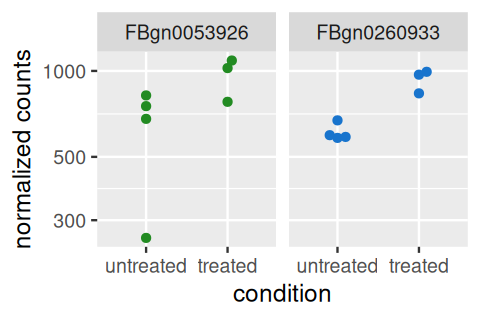</a></p>
<ol type="a">
<li></li>
</ol>
<p><a href="08-chap_files/figure-html/fig-countdata-posterior-2.png" title="그림 8.10 (b):">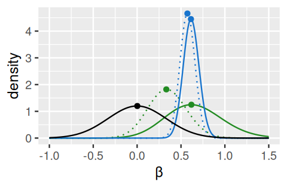</a></p>
<ol start="2" type="a">
<li></li>
</ol>
<p>그림 8.10: <strong><a href="https://bioconductor.org/packages/DESeq2/">DESeq2</a></strong> 에서의 경험적 사전 분포 사용을 통한 로그 폴드 변화 추정치의 수축 추정. 비슷한 평균 카운트와 MLE 로그 폴드 변화를 가진 두 유전자가 초록색과 파란색으로 하이라이트 되었습니다. 이 유전자들에 대한 정규화된 카운트 (a)는 파란색 유전자의 낮은 분산과 초록색 유전자의 높은 분산을 드러냅니다. (b)에는 초록색과 파란색 유전자에 대한 정규화된 우도(실선)와 사후 분포(점선)의 밀도 플롯이 나와 있습니다. 추가로, 검은색 실선은 모든 유전자의 MLE들로부터 추정된 사전 분포를 보여줍니다. 초록색 유전자의 더 높은 분산 때문에 그 우도는 더 넓고 덜 선명하며(정보가 적음을 나타냄), 사전 분포가 파란색 유전자의 경우보다 사후 분포에 더 많은 영향을 미칩니다.</p>
</section>
<section id="카운트-데이터-변환" class="level3" data-number="10.8.2">
<h3 data-number="10.8.2" class="anchored" data-anchor-id="카운트-데이터-변환"><span class="header-section-number">10.8.2</span> 8.10.2 카운트 데이터 변환</h3>
<p>차등 발현 테스트를 위해 우리는 원시 카운트(raw counts)에 대해 연산을 수행하고 이산 분포를 사용합니다. 하지만 시각화나 군집화와 같은 다른 하류(downstream) 분석을 위해서는 변환된 버전의 카운트 데이터를 사용하는 것이 유용할 수 있습니다.</p>
<p>아마도 가장 명백한 변환 선택은 로그일 것입니다. 하지만 한 유전자의 카운트 값이 0이 될 수 있으므로, 어떤 이들은 다음과 같은 형태의 <strong>의사 카운트(pseudocounts)</strong> 사용을 옹호합니다:</p>
<p>[ y = _2(n + 1)y = _2(n + n_0), ]</p>
<p>여기서 (n)은 카운트 값들을 나타내고 (n_0)은 어떻게든 선택된 양의 상수입니다.</p>
<p>이론적인 정당성이 더 크고, 위에서의 (n_0)에 해당하는 매개변수를 선택하는 합리적인 방법을 제공하는 두 가지 대안적인 접근 방식을 살펴봅시다. 한 방법은 샘플 간 차이에 대한 사전 분포를 통합하고, 다른 방법은 분산 안정화 변환 개념을 사용합니다.</p>
<section id="분산-안정화-변환-variance-stabilizing-transformation" class="level4" data-number="10.8.2.1">
<h4 data-number="10.8.2.1" class="anchored" data-anchor-id="분산-안정화-변환-variance-stabilizing-transformation"><span class="header-section-number">10.8.2.1</span> 분산 안정화 변환 (Variance-stabilizing transformation)</h4>
<p>우리는 이미 <a href="04-chap.html#sec-mixtures-vst">4.4.4절</a>에서 <strong>분산 안정화 변환</strong> 을 탐구했습니다. 거기서 우리는 이산적인 확률 변수 세트에 대해 조각별 선형 변환을 계산했고 (<a href="04-chap.html#fig-pcwlin-1">그림 4.26</a>), 또한 미적분학을 사용하여 감마-포아송 혼합물에 대한 매끄러운 분산 안정화 변환을 도출하는 방법도 보았습니다. 이러한 계산들은 <strong><a href="https://bioconductor.org/packages/DESeq2/">DESeq2</a></strong> 패키지에 구현되어 있습니다 (<a href="16-chap.html#ref-Anders:2010:GB">Anders and Huber 2010</a>):</p>
<pre><code>vsp = varianceStabilizingTransformation(pasilla)__</code></pre>
<p>첫 번째 샘플을 예로 들어 데이터에 미치는 효과를 탐구해 보고, 이를 (_2) 변환과 비교해 봅시다; 플롯은 그림 8.11에 나와 있으며 다음과 같이 만들어졌습니다:</p>
<pre><code>j = 1
ggplot(
  tibble(
    counts = rep(assay(pasilla)[, j], 2),
    transformed = c(
      assay(vsp)[, j],
      log2(assay(pasilla)[, j])
      ),
    transformation = rep(c("VST", "log2"), each = nrow(pasilla))
  ),
  aes(x = counts, y = transformed, col = transformation)) +
  geom_line() + xlim(c(0, 600)) + ylim(c(0, 9))__</code></pre>
<p><a href="08-chap_files/figure-html/fig-countdata-plotvst-1.png" title="그림 8.11: 한 샘플의 데이터에 대한 분산 안정화 변환 그래프와, 비교를 위한 \log_2 변환 그래프. 분산 안정화 변환은 카운트가 0에 가까울 때도 유한한 값과 유한한 기울기를 가지는 반면, \log_2의 기울기는 작은 카운트에서 매우 가팔라지며 카운트 0에서는 정의되지 않습니다. 큰 카운트에서는 두 변환이 본질적으로 동일합니다.">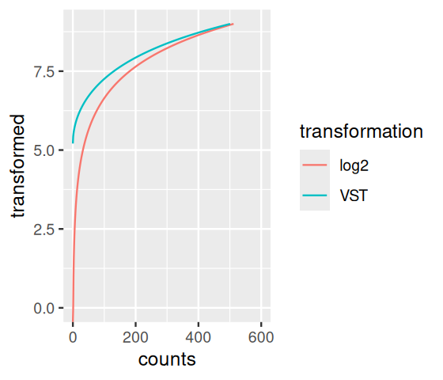</a></p>
<p>그림 8.11: 한 샘플의 데이터에 대한 분산 안정화 변환 그래프와, 비교를 위한 (_2) 변환 그래프. 분산 안정화 변환은 카운트가 0에 가까울 때도 유한한 값과 유한한 기울기를 가지는 반면, (_2)의 기울기는 작은 카운트에서 매우 가팔라지며 카운트 0에서는 정의되지 않습니다. 큰 카운트에서는 두 변환이 본질적으로 동일합니다.</p>
</section>
<section id="정규화-로그rlog-변환" class="level4" data-number="10.8.2.2">
<h4 data-number="10.8.2.2" class="anchored" data-anchor-id="정규화-로그rlog-변환"><span class="header-section-number">10.8.2.2</span> 정규화 로그(rlog) 변환</h4>
<p>데이터 변환을 도출하는 두 번째 방법이 있습니다. 이는 개념적으로 분산 안정화와는 구별됩니다. 대신, 우리가 8.10.1절에서 이미 탐구했던 수축 추정(shrinkage estimation)을 기반으로 합니다. 이는 각 샘플에 대해 별도의 항을 가지고 데이터로부터 추정된 계수들에 대한 사전 분포를 가지고 “사소한” 모델을 적합시킴으로써 원래 카운트 데이터를 (<em>2)와 유사한 스케일로 변환하는 방식으로 작동합니다. 적합은 8.10.1절에서 논의했던 것과 동일한 정규화(regularization)를 채용합니다. 변환된 데이터 (q</em>{ij})는 식 8.11의 세 번째 줄에 의해 정의되는데, 여기서 설계 행렬 ((x_{jk}))는 (K (K+1)) 크기이며 (여기서 (K)는 샘플 수) 다음과 같은 형태를 가집니다:</p>
[ X=(
<span class="math display">\[\begin{array}{ccccc}1&amp;1&amp;0&amp;0&amp;\cdot\\1&amp;0&amp;1&amp;0&amp;\cdot\\1&amp;0&amp;0&amp;1&amp;\cdot\\\\ \cdot&amp;\cdot&amp;\cdot&amp;\cdot&amp;\cdot\end{array}\]</span>
<p>). ]</p>
<p>사전 분포 없이는 이 설계 행렬이 유일한 해를 낳지 못하겠지만, 절편이 아닌 ()들에 사전 분포를 추가함으로써 유일한 해를 찾을 수 있게 됩니다.</p>
<p><strong><a href="https://bioconductor.org/packages/DESeq2/">DESeq2</a></strong> 에서는 이 기능이 <code>rlogTransformation</code> 함수에 구현되어 있습니다. 실제로는 rlog 변환 또한 대략적으로 분산 안정화 효과를 내는 것으로 나타나지만, 8.10.2절의 분산 안정화 변환과 대조적으로 서로 다른 샘플들의 크기 인자가 매우 뚜렷한 데이터에 대해 더 잘 대처합니다.</p>
<p>__</p>
<p>질문 8.12</p>
<p>이동 로그 8.12, 정규화 로그 변환 및 분산 안정화 변환에 대해 반복 실험 간의 평균 대 표준 편차를 플롯하세요.</p>
<p>__</p>
<p>해결책</p>
<p>__</p>
<p>그림 8.12를 보세요.</p>
<pre><code>library("vsn")
rlp = rlogTransformation(pasilla)

msd = function(x)
  meanSdPlot(x, plot = FALSE)$gg + ylim(c(0, 1)) +
     theme(legend.position = "none")

gridExtra::grid.arrange(
  msd(log2(counts(pasilla, normalized = TRUE) + 1)) +
    ylab("sd(log2)"),
  msd(assay(vsp)) + ylab("sd(vst)"),
  msd(assay(rlp)) + ylab("sd(rlog)"),
  ncol = 3
)__</code></pre>
<p><a href="08-chap_files/figure-html/fig-countdata-meansd-1.png" title="그림 8.12: 이동 로그 \log_2(n+1), 분산 안정화 변환(vst), 그리고 rlog에 대해, (샘플 간 계산된) 유전자별 표준 편차(sd) 대 평균의 순위(rank). 가장 왼쪽의 \approx 2,500개 유전자에 대해서는 카운트가 모두 0이므로 표준 편차가 0임에 주목하세요. 평균-sd 의존성은 0이 아닌 카운트를 가진 유전자들에서 더 흥미로워집니다. 이동 로그가 사용되었을 때 약하게 검출된(하지만 모든 카운트가 0은 아닌) 유전자들에 대해 높은 표준 편차 값이 나타나는 것에 주목하고, 이를 분산 안정화 변환의 상대적으로 평평한 모양과 비교해 보세요.">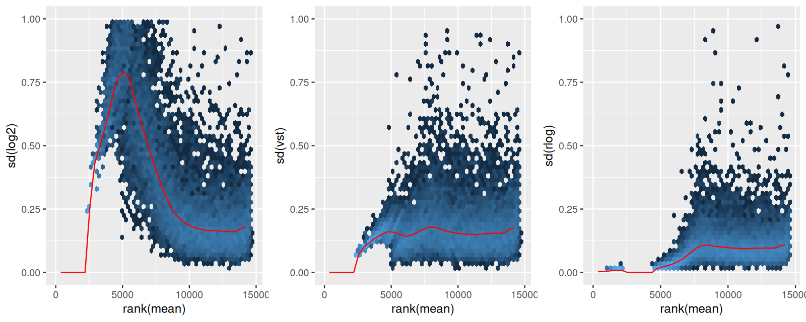</a></p>
<p>그림 8.12: 이동 로그 (_2(n+1)), 분산 안정화 변환(vst), 그리고 rlog에 대해, (샘플 간 계산된) 유전자별 표준 편차(sd) 대 평균의 순위(rank). 가장 왼쪽의 (,500)개 유전자에 대해서는 카운트가 모두 0이므로 표준 편차가 0임에 주목하세요. 평균-sd 의존성은 0이 아닌 카운트를 가진 유전자들에서 더 흥미로워집니다. 이동 로그가 사용되었을 때 약하게 검출된(하지만 모든 카운트가 0은 아닌) 유전자들에 대해 높은 표준 편차 값이 나타나는 것에 주목하고, 이를 분산 안정화 변환의 상대적으로 평평한 모양과 비교해 보세요.</p>
</section>
</section>
<section id="이상치-다루기" class="level3" data-number="10.8.3">
<h3 data-number="10.8.3" class="anchored" data-anchor-id="이상치-다루기"><span class="header-section-number">10.8.3</span> 8.10.3 이상치 다루기</h3>
<p>데이터에는 때때로 실험 또는 연구 설계와 명백히 무관해 보이며 이상치로 간주될 수 있는 고립된 매우 큰 카운트 인스턴스들이 포함되어 있습니다. 드문 기술적 또는 실험적 아티팩트, 유전적으로 다른 샘플들의 경우 리드 매핑 문제, 그리고 실재하지만 드문 생물학적 사건 등 이상치가 발생하는 원인은 많습니다. 많은 경우 사용자들이 일관된 거동을 보이는 유전자들에 주로 관심을 갖는 것으로 보이며, 이것이 기본적으로 그러한 이상치에 영향을 받는 유전자들이 <code>DESeq</code>에 의해 제외되는 이유입니다. 함수는 모든 유전자와 모든 샘플에 대해 <strong>쿡의 거리(Cook’s distance)</strong> (<a href="16-chap.html#ref-Cook1977Detection">Cook 1977</a>)라 불리는 이상치 진단 검정을 계산합니다. 쿡의 거리는 단일 샘플이 한 유전자에 대한 적합된 계수들에 얼마나 많은 영향을 미치고 있는지를 측정하며, 쿡의 거리의 큰 값은 이상치 카운트를 나타내기 위해 의도되었습니다. <strong><a href="https://bioconductor.org/packages/DESeq2/">DESeq2</a></strong> 는 자동으로 임계값 이상의 쿡의 거리를 가진 유전자들을 표시하고 그 p-값과 조정된 p-값들을 <code>NA</code>로 설정합니다.</p>
<p>기본 임계값은 표본 크기와 추정할 매개변수 수에 달려 있습니다; <strong><a href="https://bioconductor.org/packages/DESeq2/">DESeq2</a></strong> 는 (F(p, m-p)) 분포(이때 (p)는 절편을 포함한 매개변수 수이고 (m)은 샘플 수)의 99% 분위수를 사용합니다.</p>
<p>__</p>
<p>질문 8.13</p>
<p>문서를 확인하여 기본 임계값을 어떻게 변경할 수 있는지, 그리고 이상치 제거 기능을 어떻게 완전히 비활성화할 수 있는지 알아보세요. 계산된 쿡의 거리에는 어떻게 접근할 수 있나요?</p>
<p>자유도가 많은 경우 –즉, 추정할 매개변수 수보다 샘플 수가 훨씬 많은 경우– 단 하나의 카운트 이상치 때문에 유전자 전체를 분석에서 제거하는 것은 바람직하지 않을 수 있습니다. 대안적인 전략은 이상치 카운트를 모든 샘플에 대한 절단 평균(trimmed mean)으로 대체하고 해당 샘플의 크기 인자로 조정하는 것입니다. 이 접근 방식은 보수적입니다: 이상치 값을 귀무 가설에 의해 예측된 값으로 대체하기 때문에 위양성으로 이어지지 않을 것입니다.</p>
</section>
<section id="임계값-위-또는-아래의-_2-폴드-변화-검정" class="level3" data-number="10.8.4">
<h3 data-number="10.8.4" class="anchored" data-anchor-id="임계값-위-또는-아래의-_2-폴드-변화-검정"><span class="header-section-number">10.8.4</span> 8.10.4 임계값 위 또는 아래의 (_2) 폴드 변화 검정</h3>
<p>8.6절에서 제기했던 문제로 돌아가 봅시다: 통계적으로 유의미하지만 매우 작은 효과가 아니라, 충분히 강한 크기를 가진 효과를 검출하고 싶다는 우리의 요구 조건을 어떻게 검정에 반영할 것인가 하는 문제입니다. <code>results</code> 함수의 두 인수가 임계값 기반 왈드 검정(Wald tests)을 가능하게 합니다: <code>lfcThreshold</code>는 음수가 아닌 임계값 수치를 받고, <code>altHypothesis</code>는 검정의 종류를 지정합니다. 다음 네 가지 값 중 하나를 가질 수 있습니다 (여기서 ()는 <code>name</code> 인수에 의해 지정된 (_2) 폴드 변화이고, ()는 <code>lfcThreshold</code>를 나타냅니다):</p>
<ul>
<li><p><code>greater</code>: (&gt; )</p></li>
<li><p><code>less</code>: (&lt; (-))</p></li>
<li><p><code>greaterAbs</code>: (|eta| &gt; ) (양측 검정)</p></li>
<li><p><code>lessAbs</code>: (|eta| &lt; ) (p-값은 상단 및 하단 검정의 최댓값임)</p></li>
</ul>
<p>이들은 다음 코드와 시각적으로 그림 8.13의 MA 플롯들을 통해 시연됩니다. ( <strong><a href="https://bioconductor.org/packages/DESeq2/">DESeq2</a></strong> 패키지에 정의된 <code>plotMA</code> 메서드는 베이스 그래픽을 사용함에 유의하세요.)</p>
<pre><code>par(mfrow = c(4, 1), mar = c(2, 2, 1, 1))
myMA = function(h, v, theta = 0.5) {
  plotMA(pasilla, lfcThreshold = theta, altHypothesis = h,
         ylim = c(-2.5, 2.5))
  abline(h = v * theta, col = "dodgerblue", lwd = 2)
}
myMA("greaterAbs", c(-1, 1))
myMA("lessAbs",    c(-1, 1))
myMA("greater",          1)
myMA("less",         -1   )__</code></pre>
<p><a href="08-chap_files/figure-html/fig-countdata-lfcThresh-1.png" title="그림 8.13: 임계값에 대한 \log_2 폴드 변화 검정의 MA 플롯. 위에서 아래로, 검정들은 altHypothesis = &quot;greaterAbs&quot;, &quot;lessAbs&quot;, &quot;greater&quot;, 그리고 &quot;less&quot;에 대한 것입니다.">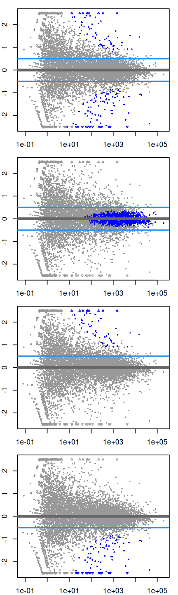</a></p>
<p>그림 8.13: 임계값에 대한 (_2) 폴드 변화 검정의 MA 플롯. 위에서 아래로, 검정들은 <code>altHypothesis = "greaterAbs"</code>, <code>"lessAbs"</code>, <code>"greater"</code>, 그리고 <code>"less"</code>에 대한 것입니다.</p>
<p>MA 플롯 대신 결과 테이블을 생성하려면, <code>plotMA</code>와 동일한 인수들(<code>ylim</code> 제외)을 <code>results</code> 함수에 제공하면 됩니다.</p>
</section>
</section>
<section id="이-장의-요약" class="level2" data-number="10.9">
<h2 data-number="10.9" class="anchored" data-anchor-id="이-장의-요약"><span class="header-section-number">10.9</span> 8.11 이 장의 요약</h2>
<p>우리는 고처리량 시퀀싱(및 유사한 데이터 유형)으로부터 얻은 카운트 테이블을 차등 풍부도에 대해 분석하는 방법을 보았습니다. 우리는 선형 모델의 강력하고 우아한 프레임워크를 기반으로 구축했습니다. 이 프레임워크에서 우리는 기본적인 두 그룹 비교뿐만 아니라 더 복잡한 다요인 설계, 또는 세 개 이상의 수준을 가지거나 연속형인 공변량이 있는 실험들을 분석할 수 있습니다. 일반적인 선형 모델에서 데이터의 기댓값 주변 표집 분포는 독립적이고 동일한 분산을 가진 정규 분포인 것으로 가정됩니다. 카운트 데이터의 경우, 분포는 이산적이며 비대칭적인(skewed) 경향이 있고 동적 범위 전체에 걸쳐 매우 다른 분산들을 가집니다. 따라서 우리는 일반 선형 모델의 일반화인 <strong>일반화 선형 모델(GLMs)</strong> 을 채용했으며, 특히 데이터로부터 추정해야 할 분산 매개변수를 가진 감마-포아송 분포 데이터를 고려했습니다.</p>
<p>샘플링 깊이는 대개 시퀀싱 실행(반복)마다 다르기 때문에, 우리는 이 가변적인 매개변수의 효과를 추정하고 우리 모델에서 이를 고려해야 합니다. 우리는 <strong>크기 인자(size factors)</strong> (s_i)를 통해 이 작업을 수행했습니다. 종종 분석의 이 부분을 <strong>정규화(normalization)</strong> 라 부릅니다 (그 용어가 특별히 기술적이진 않지만, 불행히도 이제 문헌에 잘 정착되었습니다).</p>
<p>설계된 실험의 경우, 반복 실험의 수는 대개 유전자 하나만의 데이터로부터 분산 매개변수(그리고 어쩌면 모델 계수들조차)를 추정하기에는 너무 적습니다 (그리고 그래야 합니다). 따라서 우리는 편향(bias)의 상대적으로 작은 비용으로 정밀도(precision)의 큰 이득을 약속하는 수축(shrinkage) 또는 경험적 베이즈 기법들을 사용합니다.</p>
<p>GLM은 데이터를 원래의 스케일에서 모델링하게 해주지만, 때때로 데이터를 좀 더 등분산적이고 범위를 더 균일하게 채우는 스케일로 변환하는 것이 유용할 때가 있습니다 – 예를 들어 데이터를 플로팅하거나, 범용적인 군집화, 차원 축소 또는 학습 방법들에 데이터를 노출시키기 위해서입니다. 이를 위해 우리는 분산 안정화 변환을 보았습니다.</p>
<p>여기서 연습했던 것과 같은 차등 발현 검정에 대한 주요하고 상당히 타당한 비판은, 귀무 가설 – 효과 크기가 정확히 0임 – 이 거의 결코 참이 아니며, 따라서 우리 접근 방식이 어떤 유전자가 차등 발현되는지에 대한 일관된 추정치를 제공하지 못한다는 것입니다. 실제로는 통계적 유의성뿐만 아니라 효과 크기를 함께 고려함으로써 이를 극복할 수 있습니다. 게다가, 우리는 “띠 모양(banded)” 귀무 가설을 사용하는 방법도 보았습니다.</p>
</section>
<section id="더-읽을거리" class="level2" data-number="10.10">
<h2 data-number="10.10" class="anchored" data-anchor-id="더-읽을거리"><span class="header-section-number">10.10</span> 8.12 더 읽을거리</h2>
<ul>
<li><p><strong><a href="https://bioconductor.org/packages/DESeq2/">DESeq2</a></strong> 방법은 Michael I. Love, Huber, Anders (<a href="16-chap.html#ref-LoveDESeq2">2014</a>)의 논문에 설명되어 있으며, 소프트웨어의 실무적인 측면은 패키지 비네트에 나와 있습니다. 관련 접근 방식에 대해서는 <strong><a href="https://bioconductor.org/packages/edgeR/">edgeR</a></strong> 패키지와 논문 (<a href="16-chap.html#ref-edgeR:Robinson:2009">Robinson, McCarthy, and Smyth 2009</a>) 또한 참조하세요.</p></li>
<li><p>강건 회귀와 이상치 탐지에 관한 고전적인 교재로는 Peter J. Rousseeuw와 Leroy (<a href="16-chap.html#ref-Rousseeuw:RobustBook:1987">1987</a>)의 책이 있습니다. 더 최근의 발전에 대해서는 <a href="https://cran.r-project.org/web/views/Robust.html">CRAN 태스크 뷰: 강건 통계 방법(Robust Statistical Methods)</a>이 시작하기 좋은 곳입니다.</p></li>
<li><p><a href="https://www.bioconductor.org/help/workflows/rnaseqGene" class="uri">https://www.bioconductor.org/help/workflows/rnaseqGene</a> 에 있는 바이오컨덕터 RNA-Seq 워크플로 (<a href="16-chap.html#ref-BiocRNASeqWorkflow">Michael I. Love et al.&nbsp;2015</a>)는 여기서 우리가 생략했던 RNA-Seq 관련 여러 이슈들을 다룹니다.</p></li>
<li><p>우리가 본 일반화 선형 모델을 확장하여 RNA-Seq 데이터로부터 대안적 엑손 사용(alternative exon usage)을 탐지하는 방법이 <strong><a href="https://bioconductor.org/packages/DEXSeq/">DEXSeq</a></strong> 논문 (<a href="16-chap.html#ref-Reyes:GnomeResearch:2012">Anders, Reyes, and Huber 2012</a>)에 제시되어 있으며, 생물학적 발견에 이러한 아이디어들을 적용한 사례들이 Reyes 등 (<a href="16-chap.html#ref-Reyes:PNAS:2013">2013</a>)과 Reyes 및 Huber (<a href="16-chap.html#ref-Reyes:NAR:2017">2017</a>)에 의해 설명되었습니다.</p></li>
<li><p>RIP-Seq, CLIP-Seq과 같은 일부 시퀀싱 기반 어세이의 경우, 생물학적 분석 목표는 <strong>입력(input)</strong> 과 <strong>면역 침전물(immunoprecipitate, IP)</strong> 사이의 비율이 조건 간에 변했는지 테스트하는 것으로 귀결됩니다. 바이오컨덕터 포럼에 올라온 Mike Love의 포스팅이 명확하고 빠른 하우투(how-to)를 제공합니다: <a href="https://support.bioconductor.org/p/61509" class="uri">https://support.bioconductor.org/p/61509</a>.</p></li>
</ul>
</section>
<section id="연습-문제" class="level2" data-number="10.11">
<h2 data-number="10.11" class="anchored" data-anchor-id="연습-문제"><span class="header-section-number">10.11</span> 8.13 연습 문제</h2>
<p>__</p>
<p>연습 문제 8.1</p>
<p><strong>작은 p-값들의 고갈.</strong> 작은 p-값들이 고갈된 모습을 보여주는 p-값 히스토그램에 대한 다음의 간단한 생성 모델을 고려해 보세요. 그림 8.14에는 테스트된 2-수준 범주형 변수인 <code>groups</code>와의 연관성이 없는 상태에서 수행된 차등 발현 분석(이 사례에서는 단순 (t)-검정)으로부터 얻은 p-값들이 나와 있습니다. <code>x1</code>에 대해서는 히스토그램이 대략적으로 균등한 반면, <code>x2</code>에 대해서는 작은 p-값들이 고갈되어 있습니다. 이는 <code>groups</code>와 직교(orthogonal)하면서 균형 잡힌 배치(batch, 동명의 변수로 인코딩됨)가 검정 통계량의 분모를 부풀리는 추가적인 가변성을 도입하기 때문입니다.</p>
<pre><code>library("magrittr")
ng = 10000
ns = 12
x1 = x2 = matrix(rnorm(ns * ng), ncol = ns, nrow = ng)
group = factor(letters[1 + seq_len(ns) %% 2])  %T&gt;% print __


 [1] b a b a b a b a b a b a
Levels: a b


batch = factor(ifelse(seq_len(ns) &lt;= ns/2, "B1", "B2")) %T&gt;% print __


 [1] B1 B1 B1 B1 B1 B1 B2 B2 B2 B2 B2 B2
Levels: B1 B2


table(group, batch)__


     batch
group B1 B2
    a  3  3
    b  3  3


x2[, batch=="B2"] = x2[, batch=="B2"] + 2 * rnorm(ng)
pvals = rbind(
  cbind(type = "x1", genefilter::rowttests(x1, fac = group)),
  cbind(type = "x2", genefilter::rowttests(x2, fac = group)))
ggplot(pvals, aes(x = p.value)) + 
  geom_histogram(binwidth = 0.02, boundary = 0) +
  facet_grid(type ~ .)__</code></pre>
<p>(t)-검정을 선형 모델로 대체해 보세요. 먼저 오직 <code>group</code>만을 인자로 하는 모델을, 두 번째로는 (R의 포뮬러 언어로) <code>group + batch</code>인 모델을 사용하세요. <code>x1</code>과 <code>x2</code> 두 경우 모두에서 <code>group</code>의 계수에 대한 p-값 히스토그램이 균등함을 보이세요.</p>
<p><a href="08-chap_files/figure-html/fig-countdata-exbatch-1.png" title="그림 8.14: x1과 x2에 대해 수행된 검정들의 p-값 (코드 참조).">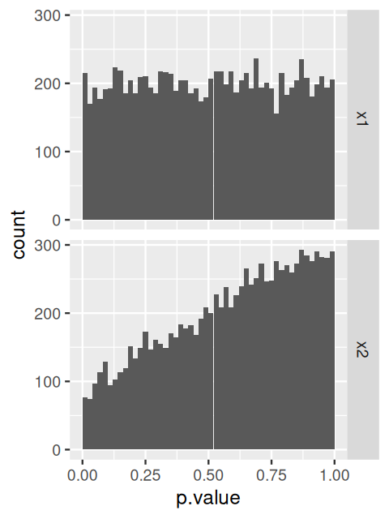</a></p>
<p>그림 8.14: <code>x1</code>과 <code>x2</code>에 대해 수행된 검정들의 p-값 (코드 참조).</p>
<p>__</p>
<p>연습 문제 8.2</p>
<p><strong>edgeR.</strong> <strong><a href="https://bioconductor.org/packages/edgeR/">edgeR</a></strong> 패키지를 사용하여 8.5절의 분석을 수행하고 그 결과를 비교하세요: (_{10}) p-값들의 산점도를 그리고, 큰 차이가 있는 유전자들을 골라 원시 데이터를 시각화하여 무슨 일이 일어나고 있는지 살펴보세요. 이에 기초하여 차이점들을 설명할 수 있나요?</p>
<p>__</p>
<p>연습 문제 8.3</p>
<p><strong>강건성.</strong> 예제 ((x, y)) 데이터 세트(예를 들어 <code>mtcars</code> 데이터)에 대해 선형 회귀를 수행하고 데이터와 함께 적합된 선을 표시하는 <strong><a href="https://cran.r-project.org/web/packages/shiny/">shiny</a></strong> 앱을 작성하세요. 넓은 범위(원래 데이터 범위 밖으로 몇 배 확장)에서 점들 중 하나를 (x)- 및/또는 (y)- 방향으로 움직일 수 있게 해주는 위젯을 추가하세요. <code>lm</code>, <code>rlm</code> 및 여러 서로 다른 <code>method</code> 선택지를 가진 <code>lqs</code> (<strong><a href="https://cran.r-project.org/web/packages/MASS/">MASS</a></strong> 패키지에 들어있음) 중에서 선택할 수 있게 해주는 라디오 버튼 위젯을 추가하세요. 보너스: <strong><a href="https://cran.r-project.org/web/packages/robustbase/">robustbase</a></strong> 패키지의 함수들을 추가해 보세요.</p>
<p>__</p>
<p>해결책</p>
<p>__</p>
<p>앱의 <code>ui.R</code> 파일용 코드:</p>
<pre><code>library("shiny")
shinyUI(fluidPage(
  titlePanel("Breakdown"),
  sidebarLayout(
    sidebarPanel(     # 이상치 이동(shift) 선택
      sliderInput("shift", "Outlier:", min = 0, max = 100, value = 0),
      radioButtons("method", "Method:",
                   c("Non-robust least squares" = "lm",
                     "M-estimation" = "rlm"))
    ),
    mainPanel(       # 적합 결과 표시
      plotOutput("regPlot")
    )
  )
))__</code></pre>
<p>앱의 <code>server.R</code> 파일용 코드:</p>
<pre><code>library("shiny")
library("ggplot2")
library("MASS")
shinyServer(function(input, output) {
  output$regPlot = renderPlot({
    whpt = 15
    mtcars_new = mtcars
    mtcars_new$mpg[whpt] = mtcars_new$mpg[whpt] + input$shift
    reg = switch(input$method,
      lm = lm(mpg ~ disp, data = mtcars_new),
      rlm = rlm(mpg ~ disp, data = mtcars_new),
      stop("Unimplemented method:", input$method)
    )
    ggplot(mtcars_new, aes(x = disp, y = mpg)) + geom_point() +
      geom_abline(intercept = reg$coefficients["(Intercept)"],
                  slope = reg$coefficients["disp"], col = "blue")
  })
})__</code></pre>
<p>물론 훨씬 더 많은 기능을 추가할 수 있습니다.</p>
<p>Anders, Simon, and Wolfgang Huber. 2010. “Differential Expression Analysis for Sequence Count Data.” <em>Genome Biology</em> 11: R106. <a href="http://genomebiology.com/2010/11/10/R106" class="uri">http://genomebiology.com/2010/11/10/R106</a>.</p>
<p>Anders, Simon, Alejandro Reyes, and Wolfgang Huber. 2012. “Detecting differential usage of exons from RNA-Seq data.” <em>Genome Research</em> 22 (10): 2008–17.</p>
<p>Brooks, Angela N, Li Yang, Michael O Duff, Kasper D Hansen, Jung W Park, Sandrine Dudoit, Steven E Brenner, and Brenton R Graveley. 2011. “Conservation of an RNA Regulatory Map Between Drosophila and Mammals.” <em>Genome Research</em> , 193–202. <a href="https://doi.org/10.1101/gr.108662.110" class="uri">https://doi.org/10.1101/gr.108662.110</a>.</p>
<p>Cook, R. Dennis. 1977. “Detection of Influential Observation in Linear Regression.” <em>Technometrics</em>.</p>
<p>Huber, Peter J. 1964. “Robust Estimation of a Location Parameter.” <em>The Annals of Mathematical Statistics</em> 35: 73–101.</p>
<p>Leek, Jeffrey T., and John D. Storey. 2007. “Capturing heterogeneity in gene expression studies by surrogate variable analysis.” <em>PLoS Genetics</em> 3 (9): 1724–35.</p>
<p>Love, Michael I., Simon Anders, Vladislav Kim, and Wolfgang Huber. 2015. “RNA- Seq Workflow: Gene-Level Exploratory Analysis and Differential Expression.” <em>F1000Research</em> 4 (1070). <a href="https://doi.org/10.12688/f1000research.7035.1" class="uri">https://doi.org/10.12688/f1000research.7035.1</a>.</p>
<p>Love, Michael I, Wolfgang Huber, and Simon Anders. 2014. “Moderated Estimation of Fold Change and Dispersion for RNA-seq Data with DESeq2.” <em>Gnome Biology</em> 15 (12): 1–21.</p>
<p>Ozsolak, Fatih, and Patrice M Milos. 2011. “RNA sequencing: advances, challenges and opportunities.” <em>Nature Reviews Genetics</em> 12: 87–98.</p>
<p>Reyes, Alejandro, Simon Anders, Robert J. Weatheritt, Toby J Gibson, Lars M. Steinmetz, and Wolfgang Huber. 2013. “Drift and Conservation of Differential Exon Usage Across Tissues in Primate Species.” <em>Proceedings of the National Academy of Sciences</em> 110 (38): 15377–82. <a href="https://doi.org/10.1073/pnas.1307202110" class="uri">https://doi.org/10.1073/pnas.1307202110</a>.</p>
<p>Reyes, Alejandro, and Wolfgang Huber. 2017. “Alternative Start and Termination Sites of Transcription Drive Most Transcript Isoform Differences Across Human Tissues.” <em>Nucleic Acids Research</em> 46 (2): 582–92. <a href="https://doi.org/10.1093/nar/gkx1165" class="uri">https://doi.org/10.1093/nar/gkx1165</a>.</p>
<p>Robinson, M. D., D. J. McCarthy, and G. K. Smyth. 2009. “edgeR: A Bioconductor Package for Differential Expression Analysis of Digital Gene Expression Data.” <em>Bioinformatics</em> 26 (1): 139–40. <a href="https://doi.org/10.1093/bioinformatics/btp616" class="uri">https://doi.org/10.1093/bioinformatics/btp616</a>.</p>
<p>Rousseeuw, Peter J. 1987. “Silhouettes: A Graphical Aid to the Interpretation and Validation of Cluster Analysis.” <em>Journal of Computational and Applied Mathematics</em> 20: 53–65.</p>
<p>Rousseeuw, Peter J., and Annick M. Leroy. 1987. <em>Robust Regression and Outlier Detection</em>. Wiley. <a href="https://doi.org/10.1002/0471725382" class="uri">https://doi.org/10.1002/0471725382</a>.</p>
<p>Stegle, O., L. Parts, R. Durbin, and J. Winn. 2010. “A Bayesian framework to account for complex non-genetic factors in gene expression levels greatly increases power in eQTL studies.” <em>PLoS Computational Biology</em> 6 (5): e1000770.</p>
<p>Steijger, T., J. F. Abril, P. G. Engstrom, F. Kokocinski, T. J. Hubbard, R. Guigo, J. Harrow, et al.&nbsp;2013. “Assessment of transcript reconstruction methods for RNA-seq.” <em>Nature Methods</em> 10 (12): 1177–84.</p>
<p>Verhulst, Pierre-François. 1845. “Recherches mathématiques Sur La Loi d’accroissement de La Population.” <em>Nouveaux Mémoires de l’Académie Royale Des Sciences Et Belles-Lettres de Bruxelles</em> 18: 1–42.</p>
<p>페이지는 R 버전 4.5.1 (2025-06-13)을 사용하여 2025-09-01 01:33에 빌드되었습니다.</p>


</section>

</main> <!-- /main -->
<script id="quarto-html-after-body" type="application/javascript">
  window.document.addEventListener("DOMContentLoaded", function (event) {
    const icon = "";
    const anchorJS = new window.AnchorJS();
    anchorJS.options = {
      placement: 'right',
      icon: icon
    };
    anchorJS.add('.anchored');
    const isCodeAnnotation = (el) => {
      for (const clz of el.classList) {
        if (clz.startsWith('code-annotation-')) {                     
          return true;
        }
      }
      return false;
    }
    const onCopySuccess = function(e) {
      // button target
      const button = e.trigger;
      // don't keep focus
      button.blur();
      // flash "checked"
      button.classList.add('code-copy-button-checked');
      var currentTitle = button.getAttribute("title");
      button.setAttribute("title", "Copied!");
      let tooltip;
      if (window.bootstrap) {
        button.setAttribute("data-bs-toggle", "tooltip");
        button.setAttribute("data-bs-placement", "left");
        button.setAttribute("data-bs-title", "Copied!");
        tooltip = new bootstrap.Tooltip(button, 
          { trigger: "manual", 
            customClass: "code-copy-button-tooltip",
            offset: [0, -8]});
        tooltip.show();    
      }
      setTimeout(function() {
        if (tooltip) {
          tooltip.hide();
          button.removeAttribute("data-bs-title");
          button.removeAttribute("data-bs-toggle");
          button.removeAttribute("data-bs-placement");
        }
        button.setAttribute("title", currentTitle);
        button.classList.remove('code-copy-button-checked');
      }, 1000);
      // clear code selection
      e.clearSelection();
    }
    const getTextToCopy = function(trigger) {
      const outerScaffold = trigger.parentElement.cloneNode(true);
      const codeEl = outerScaffold.querySelector('code');
      for (const childEl of codeEl.children) {
        if (isCodeAnnotation(childEl)) {
          childEl.remove();
        }
      }
      return codeEl.innerText;
    }
    const clipboard = new window.ClipboardJS('.code-copy-button:not([data-in-quarto-modal])', {
      text: getTextToCopy
    });
    clipboard.on('success', onCopySuccess);
    if (window.document.getElementById('quarto-embedded-source-code-modal')) {
      const clipboardModal = new window.ClipboardJS('.code-copy-button[data-in-quarto-modal]', {
        text: getTextToCopy,
        container: window.document.getElementById('quarto-embedded-source-code-modal')
      });
      clipboardModal.on('success', onCopySuccess);
    }
      var localhostRegex = new RegExp(/^(?:http|https):\/\/localhost\:?[0-9]*\//);
      var mailtoRegex = new RegExp(/^mailto:/);
        var filterRegex = new RegExp('/' + window.location.host + '/');
      var isInternal = (href) => {
          return filterRegex.test(href) || localhostRegex.test(href) || mailtoRegex.test(href);
      }
      // Inspect non-navigation links and adorn them if external
     var links = window.document.querySelectorAll('a[href]:not(.nav-link):not(.navbar-brand):not(.toc-action):not(.sidebar-link):not(.sidebar-item-toggle):not(.pagination-link):not(.no-external):not([aria-hidden]):not(.dropdown-item):not(.quarto-navigation-tool):not(.about-link)');
      for (var i=0; i<links.length; i++) {
        const link = links[i];
        if (!isInternal(link.href)) {
          // undo the damage that might have been done by quarto-nav.js in the case of
          // links that we want to consider external
          if (link.dataset.originalHref !== undefined) {
            link.href = link.dataset.originalHref;
          }
        }
      }
    function tippyHover(el, contentFn, onTriggerFn, onUntriggerFn) {
      const config = {
        allowHTML: true,
        maxWidth: 500,
        delay: 100,
        arrow: false,
        appendTo: function(el) {
            return el.parentElement;
        },
        interactive: true,
        interactiveBorder: 10,
        theme: 'quarto',
        placement: 'bottom-start',
      };
      if (contentFn) {
        config.content = contentFn;
      }
      if (onTriggerFn) {
        config.onTrigger = onTriggerFn;
      }
      if (onUntriggerFn) {
        config.onUntrigger = onUntriggerFn;
      }
      window.tippy(el, config); 
    }
    const noterefs = window.document.querySelectorAll('a[role="doc-noteref"]');
    for (var i=0; i<noterefs.length; i++) {
      const ref = noterefs[i];
      tippyHover(ref, function() {
        // use id or data attribute instead here
        let href = ref.getAttribute('data-footnote-href') || ref.getAttribute('href');
        try { href = new URL(href).hash; } catch {}
        const id = href.replace(/^#\/?/, "");
        const note = window.document.getElementById(id);
        if (note) {
          return note.innerHTML;
        } else {
          return "";
        }
      });
    }
    const xrefs = window.document.querySelectorAll('a.quarto-xref');
    const processXRef = (id, note) => {
      // Strip column container classes
      const stripColumnClz = (el) => {
        el.classList.remove("page-full", "page-columns");
        if (el.children) {
          for (const child of el.children) {
            stripColumnClz(child);
          }
        }
      }
      stripColumnClz(note)
      if (id === null || id.startsWith('sec-')) {
        // Special case sections, only their first couple elements
        const container = document.createElement("div");
        if (note.children && note.children.length > 2) {
          container.appendChild(note.children[0].cloneNode(true));
          for (let i = 1; i < note.children.length; i++) {
            const child = note.children[i];
            if (child.tagName === "P" && child.innerText === "") {
              continue;
            } else {
              container.appendChild(child.cloneNode(true));
              break;
            }
          }
          if (window.Quarto?.typesetMath) {
            window.Quarto.typesetMath(container);
          }
          return container.innerHTML
        } else {
          if (window.Quarto?.typesetMath) {
            window.Quarto.typesetMath(note);
          }
          return note.innerHTML;
        }
      } else {
        // Remove any anchor links if they are present
        const anchorLink = note.querySelector('a.anchorjs-link');
        if (anchorLink) {
          anchorLink.remove();
        }
        if (window.Quarto?.typesetMath) {
          window.Quarto.typesetMath(note);
        }
        if (note.classList.contains("callout")) {
          return note.outerHTML;
        } else {
          return note.innerHTML;
        }
      }
    }
    for (var i=0; i<xrefs.length; i++) {
      const xref = xrefs[i];
      tippyHover(xref, undefined, function(instance) {
        instance.disable();
        let url = xref.getAttribute('href');
        let hash = undefined; 
        if (url.startsWith('#')) {
          hash = url;
        } else {
          try { hash = new URL(url).hash; } catch {}
        }
        if (hash) {
          const id = hash.replace(/^#\/?/, "");
          const note = window.document.getElementById(id);
          if (note !== null) {
            try {
              const html = processXRef(id, note.cloneNode(true));
              instance.setContent(html);
            } finally {
              instance.enable();
              instance.show();
            }
          } else {
            // See if we can fetch this
            fetch(url.split('#')[0])
            .then(res => res.text())
            .then(html => {
              const parser = new DOMParser();
              const htmlDoc = parser.parseFromString(html, "text/html");
              const note = htmlDoc.getElementById(id);
              if (note !== null) {
                const html = processXRef(id, note);
                instance.setContent(html);
              } 
            }).finally(() => {
              instance.enable();
              instance.show();
            });
          }
        } else {
          // See if we can fetch a full url (with no hash to target)
          // This is a special case and we should probably do some content thinning / targeting
          fetch(url)
          .then(res => res.text())
          .then(html => {
            const parser = new DOMParser();
            const htmlDoc = parser.parseFromString(html, "text/html");
            const note = htmlDoc.querySelector('main.content');
            if (note !== null) {
              // This should only happen for chapter cross references
              // (since there is no id in the URL)
              // remove the first header
              if (note.children.length > 0 && note.children[0].tagName === "HEADER") {
                note.children[0].remove();
              }
              const html = processXRef(null, note);
              instance.setContent(html);
            } 
          }).finally(() => {
            instance.enable();
            instance.show();
          });
        }
      }, function(instance) {
      });
    }
        let selectedAnnoteEl;
        const selectorForAnnotation = ( cell, annotation) => {
          let cellAttr = 'data-code-cell="' + cell + '"';
          let lineAttr = 'data-code-annotation="' +  annotation + '"';
          const selector = 'span[' + cellAttr + '][' + lineAttr + ']';
          return selector;
        }
        const selectCodeLines = (annoteEl) => {
          const doc = window.document;
          const targetCell = annoteEl.getAttribute("data-target-cell");
          const targetAnnotation = annoteEl.getAttribute("data-target-annotation");
          const annoteSpan = window.document.querySelector(selectorForAnnotation(targetCell, targetAnnotation));
          const lines = annoteSpan.getAttribute("data-code-lines").split(",");
          const lineIds = lines.map((line) => {
            return targetCell + "-" + line;
          })
          let top = null;
          let height = null;
          let parent = null;
          if (lineIds.length > 0) {
              //compute the position of the single el (top and bottom and make a div)
              const el = window.document.getElementById(lineIds[0]);
              top = el.offsetTop;
              height = el.offsetHeight;
              parent = el.parentElement.parentElement;
            if (lineIds.length > 1) {
              const lastEl = window.document.getElementById(lineIds[lineIds.length - 1]);
              const bottom = lastEl.offsetTop + lastEl.offsetHeight;
              height = bottom - top;
            }
            if (top !== null && height !== null && parent !== null) {
              // cook up a div (if necessary) and position it 
              let div = window.document.getElementById("code-annotation-line-highlight");
              if (div === null) {
                div = window.document.createElement("div");
                div.setAttribute("id", "code-annotation-line-highlight");
                div.style.position = 'absolute';
                parent.appendChild(div);
              }
              div.style.top = top - 2 + "px";
              div.style.height = height + 4 + "px";
              div.style.left = 0;
              let gutterDiv = window.document.getElementById("code-annotation-line-highlight-gutter");
              if (gutterDiv === null) {
                gutterDiv = window.document.createElement("div");
                gutterDiv.setAttribute("id", "code-annotation-line-highlight-gutter");
                gutterDiv.style.position = 'absolute';
                const codeCell = window.document.getElementById(targetCell);
                const gutter = codeCell.querySelector('.code-annotation-gutter');
                gutter.appendChild(gutterDiv);
              }
              gutterDiv.style.top = top - 2 + "px";
              gutterDiv.style.height = height + 4 + "px";
            }
            selectedAnnoteEl = annoteEl;
          }
        };
        const unselectCodeLines = () => {
          const elementsIds = ["code-annotation-line-highlight", "code-annotation-line-highlight-gutter"];
          elementsIds.forEach((elId) => {
            const div = window.document.getElementById(elId);
            if (div) {
              div.remove();
            }
          });
          selectedAnnoteEl = undefined;
        };
          // Handle positioning of the toggle
      window.addEventListener(
        "resize",
        throttle(() => {
          elRect = undefined;
          if (selectedAnnoteEl) {
            selectCodeLines(selectedAnnoteEl);
          }
        }, 10)
      );
      function throttle(fn, ms) {
      let throttle = false;
      let timer;
        return (...args) => {
          if(!throttle) { // first call gets through
              fn.apply(this, args);
              throttle = true;
          } else { // all the others get throttled
              if(timer) clearTimeout(timer); // cancel #2
              timer = setTimeout(() => {
                fn.apply(this, args);
                timer = throttle = false;
              }, ms);
          }
        };
      }
        // Attach click handler to the DT
        const annoteDls = window.document.querySelectorAll('dt[data-target-cell]');
        for (const annoteDlNode of annoteDls) {
          annoteDlNode.addEventListener('click', (event) => {
            const clickedEl = event.target;
            if (clickedEl !== selectedAnnoteEl) {
              unselectCodeLines();
              const activeEl = window.document.querySelector('dt[data-target-cell].code-annotation-active');
              if (activeEl) {
                activeEl.classList.remove('code-annotation-active');
              }
              selectCodeLines(clickedEl);
              clickedEl.classList.add('code-annotation-active');
            } else {
              // Unselect the line
              unselectCodeLines();
              clickedEl.classList.remove('code-annotation-active');
            }
          });
        }
    const findCites = (el) => {
      const parentEl = el.parentElement;
      if (parentEl) {
        const cites = parentEl.dataset.cites;
        if (cites) {
          return {
            el,
            cites: cites.split(' ')
          };
        } else {
          return findCites(el.parentElement)
        }
      } else {
        return undefined;
      }
    };
    var bibliorefs = window.document.querySelectorAll('a[role="doc-biblioref"]');
    for (var i=0; i<bibliorefs.length; i++) {
      const ref = bibliorefs[i];
      const citeInfo = findCites(ref);
      if (citeInfo) {
        tippyHover(citeInfo.el, function() {
          var popup = window.document.createElement('div');
          citeInfo.cites.forEach(function(cite) {
            var citeDiv = window.document.createElement('div');
            citeDiv.classList.add('hanging-indent');
            citeDiv.classList.add('csl-entry');
            var biblioDiv = window.document.getElementById('ref-' + cite);
            if (biblioDiv) {
              citeDiv.innerHTML = biblioDiv.innerHTML;
            }
            popup.appendChild(citeDiv);
          });
          return popup.innerHTML;
        });
      }
    }
  });
  </script>
<nav class="page-navigation">
  <div class="nav-page nav-page-previous">
      <a href="./07-chap.html" class="pagination-link" aria-label="7.2 데이터란 무엇인가? 행렬과 그 동기">
        <i class="bi bi-arrow-left-short"></i> <span class="nav-page-text"><span class="chapter-number">9</span>&nbsp; <span class="chapter-title">7.2 데이터란 무엇인가? 행렬과 그 동기</span></span>
      </a>          
  </div>
  <div class="nav-page nav-page-next">
      <a href="./09-chap.html" class="pagination-link" aria-label="9.2 다차원 척도법과 서열화 (Ordination)">
        <span class="nav-page-text"><span class="chapter-number">11</span>&nbsp; <span class="chapter-title">9.2 다차원 척도법과 서열화 (Ordination)</span></span> <i class="bi bi-arrow-right-short"></i>
      </a>
  </div>
</nav>
</div> <!-- /content -->


</body></html>